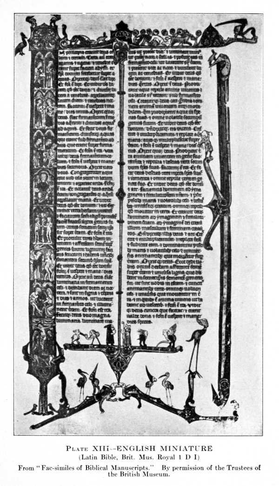

Title: The Influence of the Bible on Civilisation
Author: Ernst von Dobschütz
Release date: July 4, 2011 [eBook #36610]
Language: English
Credits: Produced by Charlene Taylor and the Online Distributed
Proofreading Team at http://www.pgdp.net (This file was
produced from images generously made available by The
Internet Archive/American Libraries.)
One of the greatest questions of our day is how modern civilisation and Christianity can go on in harmony. One can approach this question by several ways, but historical investigation has always proved to be the surest. The author has in mind to write in German a full "History of the Bible," when time will allow. Meanwhile this brief sketch may prove useful. Readers who look for references will find most of them in an article contributed by the present writer to Dr. J. Hastings's Encyclopædia of Religion and Ethics, vol. II, on "The Bible in the Christian Church."
The author wishes to express his thanks to his friend, Professor J. H. Ropes, for kindly reading the proofs for him, to Mr. W. J. Wilson and Mr. H. A. Sherman, who helped him in improving the diction, and to Professor Williston Walker for[Pg vi] valuable information regarding early American documents. If any reader should find fault with the English style of this book, he must not blame any translator—the author himself is responsible.
Ernst von Dobschütz.
Cambridge, Mass.
January, 1914.
| CHAPTER | PAGE | |
| I. | The Bible Makes Itself Indispensable for the Church (to 325 a. d.) | 3 |
| II. | The Bible Begins to Rule the Christian Empire (325-600 a. d.) | 28 |
| III. | The Bible Teaches the German Nations (500-800 a. d. ) | 47 |
| IV. | The Bible Becomes One Basis of Mediæval Civilisation (800-1150 a. d.) | 67 |
| V. | The Bible Stirs Non-Conformist Movements (1150-1450) | 94 |
| VI. | The Bible Trains Printers and Translators (1450-1611) | 117 |
| VII. | The Bible Rules Daily Life (1550-1850) | 138 |
| VIII. | The Bible Becomes Once More the Book of Devotion | 164 |
| PLATE | TO FACE PAGE | |
| I. | Harvard Papyrus. Romans 1 : 1-7 | 14 |
| II. | Origen's Hexapla | 16 |
| III. | Codex Sinaiticus | 28 |
| IV. | Roll and Book | 30 |
| V. | Vienna Genesis | 32 |
| VI. | Joshua Roll | 38 |
| VII. | The Lord's Prayer on a Potsherd | 46 |
| VIII. | Gothic Bible | 50 |
| IX. | Alcuin's Bible | 52 |
| X. | Theodulf's Bible | 54 |
| XI. | Lindisfarne Gospels | 66 |
| XII. | Byzantine Miniature | 70 |
| XIII. | English Miniature | 82 |
| XIV. | Wycliffe's Bible | 116 |
| XV. | Gutenberg's First Printed Bible | 122 |
| XVI. | First Printed German Bible | 126 |
There is a small book; one can put it in one's pocket, and yet all the libraries of America, numerous as they are, would hardly be large enough to hold all the books which have been inspired by this one little volume. The reader will know what I am speaking of; it is the Bible, as we are used to call it—the Book, the book of mankind, as it has properly been called. It has been commented upon, treated in every way, but, curious to say, hardly any one has attempted to trace its history through the centuries and mark the influence which it exerted upon our civilisation.
In order to do this we follow the traces of the Bible through the different periods of human or, to speak more accurately, of Christian civilisation. In the first period of Christian history, the time of[Pg 4] persecutions during the first three centuries of our era, there is not much to say about the Bible as influencing civilisation. Christianity was but starting on its way and fighting for its place in the world. The Bible could not exert a civilising influence upon a hostile world. But by impressing its value upon the Christian mind it made itself indispensable for the church and thereby laid the foundation for the future development.
Christianity was a living religion. The first congregations were dwelling in an atmosphere of enthusiasm. There was a general outpouring of the Holy Spirit. The prophet's words seemed to be fulfilled: "They shall teach no more every man his neighbour and every man his brother, saying: know the Lord; for they shall all know me." Christianity was not a religion of a sacred book, whose dead letter was to be artificially kept alive by learned men. It was a religion of living experiences. Nevertheless, Christianity from the beginning had a sacred book. Jesus and his disciples used the Bible of their people, the Old Testament, and Saint Paul carried it to the Christian communities of gentile origin, which had not known of it before.
Christianity could not do without it. If it was necessary to convince Jews that Jesus was the Messiah, how could this be done without arguing[Pg 5] from the Scriptures as proof? If the gospel was to be announced to the heathen they would give less heed to the new tidings than to the statement that it was really the most ancient form of religion as attested by this sacred book, which was superior to all the books of poets and philosophers and legislators by reason of its venerable age. Christianity without any hesitation claimed the Old Testament as its own book, its own Bible. Not only was Jesus the content of this book, he was even believed to be its author. It was the spirit of Jesus which dwelt in the prophets and made them seek and search concerning the salvation offered by Christ (I Peter 1 : 10-11). "The prophets having their grace from him, did prophesy unto him," we are told in the so-called letter of Barnabas. So the Old Testament seemed to be a Christian book both in content and in origin, and it was easy enough to add some properly Christian pamphlets, as Saint Paul's letters and some gospels, the Acts and other letters, and some books of revelation. It was as necessary as it was easy, if Christianity was not to lose contact with its proper origin.
The New Testament, as we have it now, was not complete at the start. It was a collection of primitive Christian writings, larger in some ways than it is now; on the other hand lacking some of its[Pg 6] present elements. Its precise content did not become finally established until a very late period, not earlier than the end of the fourth century.
So also the size of the Old Testament was not quite fixed. There were more books in the Greek Bible of the Alexandrian Jews than in the Hebrew Bible of the Palestinian rabbis. The Christian church at first adopted the Greek Bible, but from time to time some scholar pointed out the difference, and many people thought they had better keep to the Hebrew canon. This view, championed by Saint Jerome, led to a partial rejection of the books which nowadays we usually call the Old Testament Apocrypha, until in the sixteenth century the churches accentuated their difference by a different attitude toward these books, the Calvinists rejecting them altogether, the Roman church including them as an integral part of the Bible, and the Lutherans giving them an intermediate position as books to be read with safety but without canonical authority. When, in 1902, King Edward VII was to be crowned, the British and Foreign Bible Society intended to present to his Majesty the copy of the Bible on which he was to take his oath. Then it was discovered that according to the old regulations the king of England had to take his oath on a complete Bible, that is a Bible containing the Apocrypha. The[Pg 7] British and Foreign Bible Society on its part, by its statutes, was prevented from printing Bibles including the Apocrypha; so they presented to the king a most beautiful copy, but the king did not use it for the coronation service. It is the difference between the Alexandrian and the Palestinian canon which reappears in this little struggle and thereby is seen surviving to our own time.
Unsettled as the size of the Old and of the New Testament may have been, nevertheless the principle was established at a very early date that Christianity was to have a holy Scripture in two parts, one taken over from Judaism, the other added from its own stores.
Let us stop here for a moment and try to realise what this meant. Mohammed, when founding his new religion, acknowledged, it is true, the books of the former religions, but for his own believers the unique authority is the Koran, a book which originated within a single generation and therefore is pervaded by one uniform spirit. Christianity adhered to a Bible whose larger part originated in a period much anterior to its own and in a religion inferior to Christianity. The Bible covers a period of over a thousand years. What a difference in civilisation between the nomadic life of the patriarchs and the time of Jesus! What a difference in[Pg 8] spirit between the sons of Jacob killing the whole population of Sichem in order to avenge their sister and Jesus' parable of the good Samaritan! or between the prophet Elijah killing four hundred and fifty prophets of Baal and Jesus preaching the love of one's enemies! In fact, it was possible to overcome this difference only in an age which did not read the Bible with historical notions. Even so, the juxtaposition caused much difficulty. We shall see the problem of the Law troubling the church through all the centuries. We shall find the notions of sacrifice and priesthood adapted to Christian institutions. Looking at Charlemagne or Calvin, we realise that the Old Testament is ever introducing its views into Christian minds, as authoritative as any word of the gospel.
Now, at the beginning the influence was rather the other way; the Old Testament was to be interpreted in the light of the New. And, in truth, much light came from the life of Jesus to the history of the ancient people and to the prophecies. We do not wonder that Christian minds were excited by all this fresh illumination, and we must not wonder that sometimes they remodelled the tradition of the life of Christ to accord with the Old Testament.
The harmony between the two Testaments soon became a leading idea in Christian doctrine. Some[Pg 9] heretics, indeed, would not accept the Old Testament. Marcion maintained that it came from an inferior god, while the supreme God, the father of our Lord Jesus Christ, had revealed himself only through his Son. He found a great many contrasts between the Old and the New Testament, and this criticism was supported by pagan philosophers, as, for example, Porphyry. The church, therefore, was most anxious to establish the harmony of the Testaments by any means at its command. Taste varies from century to century; the minute parallelism constructed by some early Christian writers, and evidently much admired by their contemporaries, seems to us rather ridiculous and fanciful. On the other hand, the church was right in maintaining the harmony. The New Testament needs to be explained from the Old Testament; it is open to much misunderstanding when taken apart. There was almost no sense for historical development at that time; the criticism of Ptolemæus, in his famous letter to Flora, where he speaks of several strata of revelation running through the Old and the New Testament, is an exceptional one. For most of the faithful the Christian doctrine was directly looked for and found in the Old Testament; the gospel was contained in every one of its books, from Genesis to Malachi. Unity was conceived as uniformity.[Pg 10]
This was the system which appealed most to the average Christian mind. And the Bible was open to all Christians, as Harnack has brilliantly demonstrated in a recent publication. The ancient church laid stress upon this publicity and never tried to withdraw the Bible from the people. There was no hidden mystery regarding the Bible. On the contrary, all members of the church were anxiously urged to make themselves as familiar with the Bible as possible. They were supposed to have copies of their own and to read them privately as well as in the congregation. Even when the struggles about the right doctrine began and the heretics sometimes held to the Bible as their champion against the doctrine of the church, the church did not remove the Bible from public discussion. The ecclesiastical party maintained that the Bible was always in favour of the true doctrine; one needs but to know how to read it. Tertullian, it is true, once in the heat of controversy declared that it was no use arguing against heretics from the Bible, but he did it, nevertheless, and so did the other fathers.
The Bible proved its spiritual value to the experience of every reader. A man familiar with the Psalms has a treasure which cannot be lost; in any situation he will find what is suitable for his needs. If one looks for examples of faith, the author of the[Pg 11] epistle to the Hebrews in his eleventh chapter gives a splendid model for finding heroes of faith all through the Bible. The book of Genesis, especially its first chapters, was of particular interest for most of the readers on account of the sublime description there given of the beginnings of mankind. The creation story in Genesis implies much more than even the finest of all Greek myths, namely, the myth in Plato's Timæus, with which it was compared by the emperor Julian. The mighty words, "In the beginning God created heaven and earth," proved to be the one true answer to all the cosmological questions of Greek philosophy, and besides there was ample room for introducing whatever was wanted—such as the creation and the fall of the angels—if only one knew how to read between the lines.
In an old Christian book dealing with church regulations and the rules for individual Christian life we find the following admonition to use no other book at all except the Bible, because, as the author says, the Bible contains literature of every kind. The passage runs:[1]
Stay at home and read in the Law and in the Book of the Kings and in the Prophets and in the Gospel (which is) the fulness of these things. Keep far away [Pg 12]from all the books of the heathen; for what hast thou to do with foreign words or with false laws or prophecies which also easily cause young people to wander from the faith? What then is wanting to thee in the Word of God, that thou throwest thyself upon these myths of the heathen? If thou wishest to read the tales of the fathers, thou hast the Book of the Kings; or of wise men and philosophers, thou hast the Prophets amongst whom thou wilt find more wisdom and science than among the wise men and the philosophers, because they are the words of God, of the one only wise God. If thou desirest song, thou hast the Psalms of David or if the beginning of the world, thou hast the Genesis of great Moses; if law and commandments, thou hast the book of Exodus of the Lord our God. Therefore keep entirely away from all these foreign things, which are contrary to them.
[1] Didascalia, ch. ii, p. 5 in Mrs. M. D. Gibson's translation.
The Bible, in fact, pervaded the whole life of a Christian. It was the Bible, its history, its commandments, that he was taught as a child in his parents' home. When the girls gathered in the women's hall to spin, they would sing and talk about God's revelations more eagerly than even Sappho had praised her luxurious love—according to an expression used by Tatian in his Apology. The prayers, private as well as ecclesiastical, all echoed Biblical phrases, and even at burials the Christians sang joyful psalms.
So the Bible became familiar to the Christians of that time. We are astonished to find how well[Pg 13] they knew it. The sermons of this period are full of Biblical allusions, and evidently the preacher could expect them to be understood.
This is the more remarkable as the circulating of the Bible in this time met with the greatest difficulties. There was, of course, a large amount of Bible reading in the congregations. According to Justin's description of early Christian worship about 150 a. d., the service began with continuous reading of the Bible through many chapters, as far as time would allow. Then an officer, bishop or elder, would begin to preach. The office of reading was esteemed so highly that it was regarded as based on a special spiritual gift; the anagnostes, i. e., the reader, in the earliest time had his place among the prophets and spirit-gifted teachers. And, in fact, if we look at the earliest manuscripts of the Bible which have come down to us, we shall almost think that supernatural assistance was necessary for reading them: no punctuation, no accent, no space between the words, no breaking off at the end of a sentence. The reader had to know his text almost entirely by heart to do it well. From the "Shepherd of Hermas," a very interesting book written by a Roman layman about 140 a. d., we learn that some people gathered often, probably daily, for the special purpose of common reading and learning. But[Pg 14] even granted that the memory of these men was not spoiled by too much reading, as is ours, so that by hearing they were able to learn by heart—it is said of some rabbis that they did not lose one word of all their master had told them, and, in fact, the Talmudic literature was transmitted orally for centuries—nevertheless, we must assume that these Christians had their private copies of the Bible at home. The evidence from the allusions of preachers to private reading is strong. Cyprian addresses a Christian: "Your life should be one of assiduous prayer or reading (of the Bible): now you speaking to God, now God to you."
An attempt to copy the letters of St. Paul (Romans counts as A = first letter) giving the text only unto Romans 1 : 7; late third or early fourth century.
From Oxyrhynchus Papyri, Vol. II, PI. II, Egypt Exploration Fund—London.
Here begins our difficulty: how did they get so many copies? There was an organised book-trade in the ancient world; publishers had their offices, using (instead of printing-presses) slaves who were trained in copying; they had shorthand writers, as well as calligraphers to do the fine writing. But as long as Christianity was still an oppressed religion it is doubtful if the Bible was among the books which publishers would care to take. The Christians were, most of them, poor people who could not spend much money for procuring Bibles. Besides, it was no easy thing to get a complete Bible. At that time the books were still written on papyrus rolls, not in book form. Only one side of the [Pg 15] papyrus could be used; the roll would become unwieldy if too long. So, in order to get all the books of the Old and the New Testament, at least two dozen rolls had to be written. Maybe a simple Christian copied for himself one gospel or some letters or even one or more books from the Old Testament. There are preserved on papyrus some unfinished attempts which show what hard work it was (Plate I). We can scarcely imagine a man going with this heavy hand through all the books of the Bible.
We are told that wealthy Christians helped their brethren by procuring copies for them. Origen, the greatest Bible scholar of the ancient church, is said to have been supported by a rich admirer, who put at his disposal a number of slave copyists. With their help he succeeded in creating one of the greatest works which Bible criticism ever undertook, his so-called Hexapla, which is a comparison of more than six various Greek translations of the Old Testament. Scholars in the nineteenth century held that scarcely more than one copy of this enormous work had ever been written, but by recent discoveries we know that it was copied several times (Plate II). A later admirer of Origen, Pamphilus, is said always to have carried with him several rolls in order to provide poor brethren. Now that was the third century. Christianity had already begun to spread[Pg 16] among the higher classes and to become a feature in the world's life.
Fragment found in the Cairo-Genizah and published by E. Taylor in 1900; parchment, fifth century, with part of second, third, and fourth columns: Ps 22 : 25-28; used later for copying Hebrew texts.
From "Hexapla of Origen," by E. Taylor, published by G. P. Putnam's Sons.
Devotional reading of the Bible was accompanied by scholarly interpretation. We mentioned Origen as the greatest Bible scholar of his time, if not of all times. It may be worth while to insert here a few words on his life. A native of Alexandria, he saw as a boy his father dying as a martyr for his Christian faith; he longed to become a martyr himself, and was only prevented from giving himself up by a trick of his mother's, who concealed all his clothes. He got a good training at the catechetical school of Alexandria, not restricting himself to mere Christian and Biblical studies, but reading the pagan philosophers of his time as well as the Greek classics. A youth of only eighteen years, he became the head of the school, and his fame spread all over the empire. He travelled to Rome, to Greece; he was even asked by the Roman governor to come to Arabia to settle certain questions. So zealous was he to fulfil the commandments of the gospel that, misunderstanding one of the Lord's sayings, he made himself a eunuch for the kingdom of heaven's sake, which brought him into trouble in his later life. When once on a journey through Palestine he, being still a layman, had preached before the bishop of Cæsarea, he was summoned by his [Pg 17] own bishop and ordered not to preach. Some years afterward the bishop of Cæsarea, who was among his strongest admirers, ordained him a priest, which caused his bishop to banish him from Alexandria. He settled at Cæsarea and lived there for twenty years without ever aiming at any ecclesiastical position, pursuing his study of the Bible and gathering around his chair the best men from every part of Christianity. So great was his fame that the empress Julia Mammæa, being still a pagan, asked him to see her when she was travelling in the East. He was the one man to refute the vigorous attack made against the truth of Christian doctrine by the philosopher Celsus. When persecution began again he wrote a tractate of comfort, "On Martyrdom," and another, "On Prayer." He himself suffered imprisonment and torture, and died after his release, as a result of these sufferings, at the age of sixty-nine.
We can scarcely do honour enough to this man, who three centuries after his death was proclaimed to be one of the most dangerous heretics, the church, however, using his learning in the form of extracts. The vast amount of reading, the sagacity, and the perspicuity of the man are alike admirable. He is said to have commented upon nearly all the books of the Bible, and this three times. He wrote short[Pg 18] annotations, he compiled large and learned commentaries, and he preached before the congregation. Only a small part of his works has come down to us, but this fills volumes. Origen's great merit is that he brought Christian interpretation to a system which enabled the church to retain the plain historical sense alongside the so-called higher meaning.
For a long time gentile philosophers as well as Jewish preachers had adopted the method of treating their sacred books allegorically. Homer, it was assumed, in telling his stories of battles of gods and heroes, meant quite another thing; otherwise he would be guilty of irreligion. He meant that the powers of nature and the energies of the human soul came into struggle, and therefore virtues and vices were fighting one with another. The same thing was done by Philo for the Old Testament. There was no real history; all was symbolical, allegory. Christianity tried to follow in this path. The gnostics indulged in the wildest form of allegory. But it was not safe to give up the idea of historicity altogether. Jesus and his gospel were historical facts, not mere ideas; they were emptied of all meaning if turned into allegory. And likewise the history of the Old Testament could not simply be reduced to allegorical metaphors. Origen saved the situation by asserting that each of these two views had its proper place.[Pg 19] His theory is that as man consists of body, soul, and spirit, so the holy Scripture has a threefold nature, to which corresponds a threefold interpretation. The body stands for the plain historical meaning: Jesus did cast out of the temple those that sold oxen and sheep and doves and the changers of money. There are some historical difficulties, Origen admits, if we compare the different gospel narratives and if we take account of the fact that a single man did this; Origen explains that it was a miracle showing the divine power in Jesus. But there are other aspects too. The soul represents the higher moral view: Christ is always casting out of his church, which belongs to the heavenly Jerusalem, the men who are profaning it by their money-making. And, lastly, there is the spirit, that is, the supreme mystical understanding. The spirit of Christ, entering its temple, the man's soul, casts out of it all earthly desires and makes it a house of prayer. Now that is very ingenious. These three strata of interpretation allow for a great variety in explanation and adaptation. Origen succeeds by this method in keeping the essential historical basis and adding what in those days was thought to be most significant. The Bible, being a divine book, seemed to require a higher form of interpretation; the Holy Ghost of God was supposed[Pg 20] to be a spirit of mysteries; it was assumed that to interpret the Bible in a plain way was to think of God meanly.
Of course, the Bible contained some allegories which might seem to support this theory of allegorical interpretation; for instance, the beautiful vision of Ezekiel, told in the thirty-seventh chapter of his book: he sees the valley full of dry bones, and at the command of God he prophesies over them and they begin to come together, and flesh came up and skin covered them above and at last breath came into them and they lived. It is a magnificent allegory of the people of Israel, scattered in the exile and brought to life again by the power of God. It is irritating to see the fathers just at this point declining to follow the path of allegorical interpretation. They insist upon the reality of the occurrence; it is to be taken literally as resurrection of the dead—so it has influenced all mediæval pictures of the last judgment! I need only add that the rabbis took Ezekiel's description in the same way, as a real occurrence, arguing for the historicity by showing the phylacteries which the risen persons had worn—and one feels what a pity it is to treat allegory as history. But the opposite fault is still worse: the spiritualising and allegorising of real history is the greatest damage ever done to religion.[Pg 21]
Theologians tried to establish the authority of the Bible. This had already been done in some measure by the rabbis of the synagogue. In taking over the Bible the Christians had only to accept their estimate of it, but they were not quite satisfied with it. The rabbinical doctrine was a rather mechanical one: God had used men, just as a man uses a pencil to write with. The pencil does not act consciously: so the Old Testament writers, according to this theory, did not take any part in what they were writing; it was to them as another man's script. Commenting upon the last chapter of Deuteronomy, where the death of Moses is described, a rabbinical authority remarks: "Until this passage God dictated and Moses wrote; henceforth God dictated and Moses wrote weeping"—namely, the account of his own death. There was so little interest in the human author that he could be eliminated altogether. We are told by an early Jewish legend that all books of the Old Testament had been destroyed at the time of Nebuchadnezzar, when the temple was burned; so God dictated them all to Ezra. According to this theory Ezra would be the real author of the whole Old Testament. This is the most mechanical way of representing the equal inspiration of all parts of the Old Testament. The Jews of the dispersion had a somewhat similar theory[Pg 22] about the inspiration of their Greek Bible; when Ptolemy Philadelphus, king of Egypt, gathered at Alexandria seventy elders of the Jews to make the Greek translation of their law, he put each one of them in a separate cell in order to avoid any communication between them, so the legend runs. Then, after working for seventy days, all at once they shouted "Amen" from their cells, having accomplished their task, and when the seventy copies had been compared they were found to agree even in the smallest detail. Here we have again an attempt to assert inspiration not only for the book itself but also for its translation. It is as mechanical as the former, all human co-operation being excluded.
Christians did not want this. In Jesus they had experienced living revelation; they had prophets among themselves. So, at least at the beginning, they had a much higher view of inspiration. God enters a man's soul and fills it with his spirit; now the man acts and speaks in the power of this spirit, and yet he is not unconscious of his own doing and speaking. There are two ways of inspiration, we are told by Clement of Alexandria: either God snatches up the man's soul and conducts it to the unseen world and shows to it whatever he wishes it to know—this is ecstasy—or God enters the man and fills him and makes him his organ. The latter, less striking[Pg 23] though it appears, is nevertheless the higher and more valuable concept. Therefore the fathers do not so much use the metaphor of the pencil as the similitude of a musical instrument, whether a flute through which the Holy Spirit is playing, or a harp which he touches with a plectrum.
Much as they appreciate the holy Scripture, the early fathers usually talk about it in a very unpretentious manner. They have not yet developed those gorgeous formulas of quotation which are used in later times. They quote simply: "Scripture says," or "Paul says," not "the holy and glorious apostle in his most excellent epistle to the Romans says exceedingly well." They talk in simple words, but they are prepared even to die for this Bible.
Eusebius, the first historian of the Christian church, to whom we are indebted for so much invaluable information, tells us a moving story about Marinus, a young Christian officer in the Roman army, at Cæsarea, in Palestine. He had the confidence of his superiors and was to be promoted to the higher rank of captain. Then out of jealousy one of his comrades denounced him as a Christian. Summoned before his colonel, he was asked if this was true, and when he confessed he was urged to abjure his faith. The colonel gave him three hours' time. So he went to the small Christian church,[Pg 24] where he found the venerable old bishop. The bishop, hearing his story, took the Bible in one hand and the soldier's sword in the other. "This is your choice," he said. And the soldier, without hesitating, grasped the Bible, went back, and declared himself to be and to remain a Christian. And instead of receiving military promotion he became a martyr.
It is a significant little story. Indeed, after a hard struggle, lasting through nearly three centuries, when the Roman empire found it necessary to attempt the final destruction of Christianity the attack was mostly directed against the Bible. Diocletian, in 303 a. d., on the 24th of February, issued an edict ordering all Christian churches to be destroyed and all Bibles to be burned. He relied on the Roman law, which forbids not only the exercise of magical arts, but the science of magic, too, and therefore condemns all books of magic to be burned. The Christians were accused of employing magic, and their Bible was treated as a magical book.
We have thrilling accounts of Christians trying to conceal their treasured Bible rolls from the eyes of the inquiring officials. They took them from the church into their private homes, securing the Bible in safety but many a time bringing persecution upon themselves. To the officials they[Pg 25] surrendered books of various kinds in order to escape from surrendering the Scriptures. Asked if they had sacred books in their houses, many of them would answer: "Yes, in our hearts." The enthusiasm was so great that they believed the story of any miracle in support of the Bible. They maintained that copies of the Bible which had been thrown into the fire by the heathen were not burned or even touched by the flame.
Naturally there were others who were not strong enough in their faith to resist, but these "surrenderers," as they were called, were cast out of the church and never admitted again. During the fourth century to bring against a clergyman the charge of having surrendered sacred books at that period of persecution was felt to be the most serious accusation possible. Even to be ordained by a bishop who was under suspicion of having surrendered his church's holy Scriptures was held a disgrace by a large party of zealous Christians who demanded that orders of this kind be invalidated. The records of a trial held at Carthage in 329 a. d. dealing with this question have come down to us. Here documents from 303 a. d. were introduced as evidence against the clergy, and the whole forms one of the most illuminating pages of church history.
Even to be found reading the Bible made a man[Pg 26] guilty of obstinate resistance to the emperor's law and involved him in penalty. There was a deacon at Catania in Sicily named Euplus. He was reading the holy Scripture when the sheriff laid hold of him. Brought before the judge he takes his copy of the Gospel and reads from it (Matt. 5 : 10): "Blessed are they that have been persecuted for righteousness' sake, for theirs is the kingdom of heaven," and (Matt. 10 : 38): "And he that doth not take his cross and follow after me, is not worthy of me." The judge asks him: "Why did you not surrender those volumes which the emperors forbade?" "Because," he replies, "I am a Christian and it was not loyal to surrender. It is better to die than to surrender." We do not need the addition made by a late Byzantine hagiographer that the copy of the Gospels was hung on his neck when he was conducted to execution. It is clear enough that he was suffering for his devotion toward the Bible and that it was the gospel which inspired his boldness.
Euplus does not stand alone. I could mention a dozen martyrs whose acts all give the same impression. Sometimes a gathering of men and women is apprehended while reading the Bible, and the whole company is forthwith carried away to the most painful tortures.
These Christians knew what the Bible was to[Pg 27] them. All declamations of later theologians about the inspiration and the authority of the Bible count for nothing compared with this testimony.
After all, we do not wonder that the Bible became a civilising power as soon as Christianity had won its victory.
After the persecution by Diocletian a new era began. Constantine proclaimed tolerance, and by and by Christianity became the religion of the empire. The victory of Christianity was a victory of the Bible as well. This finds its expression in the remarkable fact that the first Christian emperor, the immediate successor of those who persecuted the Bible and tried to destroy it, ordered fifty splendid copies of the Bible to be prepared at his expense for the churches of the newly founded capital, Constantinople. Some scholars have thought that one or two of these copies still survive in the famous manuscript discovered by Tischendorf in the Convent of Mount Sinai (Plate III), or in the Codex Vaticanus at Rome. I venture rather to think that both copies belong to the period of Constantine's sons. But the fact that the Bible, after a period of destruction when most of the earlier copies were burned, got a surprising circulation under official direction accounts, I think, for a puzzling feature in [Pg 29] the transmission of the text. From the Old Latin and the Old Syriac, as well as from the testimony of the fathers, we can infer that various forms of the Greek text must once have been widely circulated, which have now almost disappeared, whereas most of our present Greek manuscripts give a text evidently based on a late official recension. Looking at Diocletian's attempt to destroy the Bible altogether and at Constantine's official order to provide a large number of manuscripts, we easily understand the situation. The older forms of text had been swept away; now there was room to supply their place with the learned attempts of later scholars from the schools of Origen or Lucian who endeavoured to bring in more critical texts.
End of St. Mark (15 : 16-16 : 8) and beginning of St. Luke (1 : 1-18); Mark 16 : 9-20 is missing; 15 : 47 is added at the lower margin by a later hand; remark the numbers of Eusebius's sections and canons. The eight columns of the open book recall the roll-system.
Reduced one-fifth from the fac-simile edited by Prof. Lake and published by the Clarendon Press
(Oxford and London).
Another change is to be mentioned at the same time. The old form of papyrus rolls became obsolete and the parchment book took its place. The use of this latter form seems to originate in the law schools; the codex, or parchment book, is at first the designation of a Roman law-book. But at an early date the Christian church adopted this form as the more convenient one and gave it its circulation. We hardly say too much when we call the Bible the means by which our present form of book came into general use. Even if the Bible had done nothing else for civilisation than to give man[Pg 30]kind the shape of its books that would be a great deal (Plate IV).
The form of a parchment book, or codex, would admit of the copying of several books in one volume. The great Bibles of the fourth and fifth centuries of which we know contained all the books; they formed one volume. So the internal unity running through the Bible as a whole came to be represented even in the outward form.
St. Luke the Evangelist copying from a roll into a book (codex form): miniature from a Greek manuscript at the Vatican library (gr. 1158), eleventh century.
From "Vatikanische Miniaturen." Copyright by B. Herder, Freiburg.
The copying of the Bible went on rapidly, monks and noble Christian ladies undertaking it as a form of ascetic work, providing a heavenly merit and sometimes earning bread and butter, too. Instead of the plain copies in an unskilled hand we now find sumptuous books of the finest parchment with purple colouring, in the most luxurious manuscripts the sacred text being written in gold and silver, and the margin sometimes being covered with beautiful paintings. A copy of Genesis in Greek at the Vienna library has forty-eight water-colours, one at the bottom of each page, telling the same story as the text. The manuscript when complete must have had sixty folios: this gives one hundred and twenty of such decorated pages for Genesis, and if it contained the whole Pentateuch we may allow for five hundred and ten illustrations (Plate V). And this manuscript does not stand alone; it is but one of [Pg 31] a large group of illuminated manuscripts. This sumptuous appearance may be taken as a sign of the value attached to the Bible. Persecuted hitherto, it became the ruler of the Christian empire, invested with all the glory of royalty.
The place given to the Bible is best shown by the fact that it presided over the great councils, a copy of the Bible lying upon the presidential chair. It was meant as a symbol for Christ himself taking the place of honour and deciding the great questions of faith. The same holds true for non-ecclesiastical assemblies. In an ordinance of the emperor Theodosius it is required that a copy of the Bible be present in every court-room. The Bible, or rather the Gospels, or to speak even more precisely the most prominent page in them, the beginning of the first chapter of St. John's Gospel, was used for taking an oath. The worn condition of this page in many a manuscript still attests this use.
Presiding over the courts, the Bible began at once to exercise its influence upon the Law. We can already trace this influence in the legislation of Constantine himself: when he forbids to brand a criminal on his face, giving as reason that the image of God ought not to be marred, it is the Biblical notion of the man's face being the likeness of God which underlies this law. When, in a law published in 334,[Pg 32] he insists that no man, whoever he is and whatever rank he has, shall be admitted as a solitary witness unless supported by another witness, it is the well-known Biblical rule that at the mouth of two or three witnesses every word shall be established. When he makes divorce more difficult, denying the right of remarriage to the man who repudiates his wife without sufficient reason on her part, we feel that it is the injunction of Jesus which is behind this law. I would not say the same of all parts of this legislation which various scholars have adduced as proving Christian influence. Roman law from the second century was influenced to a large extent by the Stoa, all the famous lawyers such as Gaius and Paulus belonging to this school and introducing its ideas into the practice of the courts and into the legislation of the magistrates, especially of the emperor. There is an evident development in the Roman law toward a more humane conception of slavery; this is due to the Stoa. The views on marriage and divorce, the position of "natural children," as the Roman law calls illegitimates, all this is largely due to non-Christian influences. Nevertheless, there are unmistakable traces of a particular influence of the Bible upon the legislation of the Christian emperors, and this influence increases from decade to decade. Constantine gives a rather vague ordinance for keeping Sunday as a day on which courts are not to be held. Theodosius is much stricter; and the climax is reached with Justinian, when Sunday has become a legal holiday.
The paradise: Adam and Eve appear three times: (1) under the tree of knowledge, Gen. 3 : 6; (2) when discovering their nakedness, 3 : 7; (3) when hiding themselves from the Lord among the trees, 3 : 8. The divine voice, represented by the hand from heaven, belongs to this third scene; it is put in the centre merely for artistic reasons.
From "Die Wiener Genesis." F. Tempsky, Vienna.
Justinian, of course, codifies the Roman law, but his Novellæ, the laws issued by himself, show the new spirit of a legislation ruled by the Bible. He sometimes refers directly to the Bible as authority. Still more is this spirit prevalent in some provincial codes. One of these says that everything has to be judged according to the ancient and to the modern law, i. e., the law of Moses, which antedates the laws of all other nations, and the law of Christ, as it is contained in the laws of the emperors Constantine, Theodosius, and Leo. Lawyers of this period indulge in comparisons between the Roman law and the law of Moses.
The Roman empire was Latin in some respects, Greek in others. Latin was the official language of the court, of the law, of the army. But the population spoke mostly Greek, though from the third century on large parts used their native language, Syriac and Coptic, as well. The Bible had been translated into these languages during the former period. Now the general political situation brings the empire into contact with the Goths in the North, with Armenians and Georgians in the East, with[Pg 34] Libyans and Ethiopians in the South. As soon as the empire gains any influence among these neighbouring peoples, the Christian mission tries to get hold of them and we see the Bible translated into these languages, which hitherto have had no writing. The Bible marks for these peoples the beginning of a national literature. Their alphabets were made up from the Greek, thus showing that the reading of the Bible with these nations began in connection with their intercourse with the Roman empire.
The Bible ruled even the Greek language of this empire. There are many changes in the later Greek which are surely due to familiarity with the Bible. Words previously unknown in Greek or used in a different sense became quite familiar; everybody knows what is the meaning of Beelzebub, Messiah, Paradise, Satan, and that an angel is not a mere messenger, but is a messenger from God, a spiritual being, and that the word demon always means an unclean spirit.
Moreover, the Bible influenced the style of the writers, especially of the great preachers. One may distinguish three forms of influence in this department: artificial imitation; naïve use of Biblical names and phrases (what is usually called in Germany the language of Canaan); and, lastly, the un[Pg 35]conscious influence which the style of any book exerts upon a careful reader. I do not think that there are many instances of artificial imitation in this period. Sometimes a preacher skilfully composed his whole sermon by adding Biblical quotation to quotation; asked to preach a sermon on a saint's day, he did nothing else than comment upon the saint's life in Biblical phrases. The second type of influence is very common; the present emperor is usually spoken of as the new David; the story of a war is always told as if David were fighting the Philistines; each heretic is entitled to be called the new Judas Iscariot who betrays his Lord. The most famous example of this kind is the sermon attributed to Chrysostom after his first return to Constantinople, when he had fled from the wrath of the empress: "Again Herodias is furious, again she flurries, again she dances, again she desires the Baptist's head to be cut off by Herod." The preacher's own Christian name, of course, was John, and the empress was trying to get rid of him for political reasons.
The most important influence, however, is the unconscious influence simply from the use of the Bible. The great power of Chrysostom's sermons was partly due to his eminent rhetorical talent and training. He knew how to gain his hearers' attention; yet for the greater part his thorough ac[Pg 36]quaintance with the Bible seems to be responsible. Reading the sermons of those great Greek Christian orators of the fourth century, we are often struck by the embedded quotations from the Bible. In the midst of this fluent Greek there is something quite different, something stern, something austere, something dignified and solemn, which immediately appeals to the hearer. As a matter of fact, the preachers themselves, proud as they were of their classical training, had rather the opposite impression; they apologise for introducing barbarous language. Chrysostom insists, in many a sermon, on the idea that the apostles were fishermen, unskilled in literary style, and that it is one of the proofs of inspiration that those men could write at all. He evidently is not aware of the fact, clear to us, that it is just the vigour and strength of Biblical language which gave to his own sermons their magnificent effect. He was filled with Biblical phraseology as was no other preacher of his time. He himself did not realise it, nor did, I presume, the greater part of his congregation, yet it was this which so impressed them. If only the modern editors would note all the Biblical allusions in his works! Yet they are hardly able even to recognise them. We find preachers noted for their brilliancy in extemporaneous speaking, and usually the remark is[Pg 37] added, it was because the speaker knew the Scriptures by heart.
In this way the people became accustomed to Biblical phraseology, and we do not wonder that at last the colloquial Greek also was influenced by the Bible. We can trace its influence even in the romances.
The Bible ruled the home and the daily life; people had their furniture decorated with Biblical symbols; lamps showed Noah's ark or Jonah's whale, Jesus with his disciples in a ship or Jesus treading upon the lion and adder, the serpent and dragon (according to Psalm 91). At the Strassburg Museum there is a beautiful engraved glass cup made probably in a Roman manufactory in Cologne. On one side is engraved Abraham sacrificing Isaac, on the other side Moses striking water from the rock. Rich people wore sumptuous garments embroidered with representations of Biblical scenes. The preachers complain that these people wear the miracles of Christ on their coats instead of taking them to their heart and conscience.
The great officials of the empire used to give to their friends ivory tablets commemorating their honours. In former times they had represented on them the emperor, the empress, or their own portraits, and scenes from the circus; now they chose[Pg 38] Biblical subjects. People liked to have long rolls exhibiting the wars and triumphs of an emperor in a continuous series of drawings. Two gigantic rolls of this kind may still be seen at Rome; I mean the columns of Trajan and of Marcus Aurelius. Christian art produced rolls of the same kind, exhibiting the story of Joshua's battles (Plate VI). Senators and noble ladies vied with each other in arranging the history of the Bible and especially the life of Jesus in the form of poems, each word of which was taken either from Homer or from Vergil. It is a wonderful mixture of Bible and classical culture.
(At the Vatican)
Joshua is sending from Jericho (at the left, walls tumbling down) to Ai two men to spy out the land, Joshua 7 : 2. The towns are represented by edifices as well as by allegorical figures (Tyche of the City).
From "Vatikanische Miniaturen," by St. Beissel. Copyright by B. Herder, Freiburg.
The Bible rules not only the public and the private life, but also the church and its organisations. At the beginning the Christians were afraid of comparing the Old Testament rites with the ecclesiastical institutions. The Law of the Old Testament belonged to an earlier form of religion; it was abolished by the New Testament. Christ, according to Saint Paul, was the end of the Law. But by and by the Old and the New Testament were brought nearer together. An author of the first century remarks that God by his commandments in the Old Testament has shown himself to be a lover of order, therefore in the Christian congregation, too, order ought to rule. He does not call the Christian communion a sacrifice, the Christian minister a priest; [Pg 39] but his parallelism comes very near to this, and a century later the step is taken. It becomes usual to speak of bishop, elders, and deacons as high-priest, priests, and Levites. Later on, even the minor degrees were taken back to Biblical models: the subdeacon, lector, exorcist, acolyte, janitor were found represented in the Old Testament. The clergy formed a separate class as distinct from other people as the tribe of Levi was among the tribes of Israel. It was upon the authority of the Old Testament that they claimed rights and prerogatives to be given and guaranteed by the empire. The monks found their models in Elijah and Elisha; common life was represented by the apostles; penitents were Job, David, and the people of Nineveh; widows (as ecclesiastical functionaries) had their models in Naomi, Hannah, Tabitha, etc. The church was the tabernacle of Moses and the temple of Solomon, and each detail in the description of these Biblical buildings was made to agree with a feature in the Christian church by means of allegorical interpretation. The feasts of the church correspond to the feasts of the Old Testament; Easter is usually called Passover, and Whitsuntide Pentecost. At a rather early date a festival of the dedication of the individual church was introduced to correspond with the festival of the dedication of the temple.[Pg 40] As the Jews kept two days in the week for fasting, so did the Christians, choosing Wednesday and Friday instead of Monday and Thursday; and in doing so they remembered that it was on a Wednesday that Jesus was betrayed by Judas and on a Friday that he died on the cross. Even the usual hours for prayers were based on Old Testament authority; David, saying in Psalm 141 : 2 "The lifting up of my hands as the evening sacrifice," means vespers, while in the 131st Psalm he is speaking of compline, in the 63d of matins. The vigil was observed as well as commanded by Christ himself (Luke 6 : 12 and 12 : 37). The whole liturgy was explained as being in every detail a representation of the life of Christ. The sacraments, too, were prefigured in the Old Testament. This symbolism is very old and very commonly used; it has influenced Christian art. We see Noah's ark as a symbol of baptism (cf. I Peter 3 : 20); Abel's sacrifice, and Melchisedek offering bread and wine to Abraham, as symbols of the holy eucharist. Abraham entertaining at his home the three angels reveals the holy Trinity. All this is represented in splendid mosaics on the walls of the churches, as for instance in San Vitale at Ravenna.
To us this system of Biblical references for everything in the Christian service seems strange. We[Pg 41] feel that the worship of the Christian congregation rests on other principles than the ritual of the Old Testament and does not gain anything by such hazardous comparisons. It looks like comparing the stars in heaven with beasts on earth. But the fathers thought that this was the highest achievement at which they could arrive: to allegorise and spiritualise the Old Testament law in order to deduce from it the Christian liturgy. That was what they called worship in spirit and truth. It is exactly opposite to the great idea which Jesus conveyed in those words; it is one of the greatest confusions to which the juxtaposition of the Old and the New Testament in one Bible was leading. Nevertheless, it was of great influence upon civilisation for centuries.
The church and the laity were ruled by the Bible; but the real Bible folk of this time were the monks. There had been a tendency toward asceticism from the very beginning of Christianity. At the moment when the church came into power this tendency increased rapidly. In Egypt as well as in Syria, wherever there was a desert place hermits gathered and monasteries were built. Now, in these monasteries the life was really filled with the reading of the Bible. Even the poorest monk would have a copy of the Gospels to read. Some of the monks, of[Pg 42] course, were very simple, unlearned people. They could not read, so they learned it all by heart. And sometimes—we are told in the legendary tales of the monks—it happened that a monk who never before had learned to read was miraculously given the art of reading, God granting it to him as a recompense for his zeal. The monks had their hours for common worship and reading, but they were supposed to read each by himself as much as possible. "The rising sun shall find the Bible in thy hands," is one of the monastic rules, and legend illustrates how the divine grace recompensed assiduous reading: filled with heavenly light all through the night was the cell of a hermit as long as he was reading the Bible. When visitors came the talk was over questions raised by the Bible. It was with quotations from the Bible that the celebrated anchorite entertained the people who called upon him to ask for spiritual help.
Among all Biblical books the Psalter was the one most favoured by the monks. They knew it by heart, almost all of them, and they used to recite it during their manual labour. The Psalter was their spiritual weapon against the temptations of the demons; the demon liked nothing so much as to turn a monk from reciting his Psalter. But besides the Psalter it was the Gospel which prevailed[Pg 43] over all other books in these ascetic circles. Many of the hermits were induced to leave the world by attending a Gospel lesson in their church at home. "If thou wouldest be perfect, go, sell that thou hast and give to the poor, and thou shalt have treasure in heaven: and come follow me," or "And every one that hath left houses or brethren or sisters or father or mother or children or lands for my name's sake shall receive a hundredfold and shall inherit eternal life." These are the words which occur again and again in the lives of saints as the decisive ones for their "conversion," that is for leaving the world and going to the desert or entering a monastery. The first saying quoted above is referred to in the life of Saint Anthony, the greatest of all hermits, and Saint Augustine had this in his mind when the time came for him to change his life. The second saying makes Saint Hypatius go away from home; his biographer, however, is honest enough to add that the saint, a youth of eighteen, had just received punishment from his father. An actor living luxuriously with two concubines chances to enter a church, and hears read from the Gospel, "Repent ye, for the kingdom of heaven is at hand"; so he repents and becomes a monk. I do not mean to say that these tales of the monks are historical and trustworthy in every point, but I venture to think[Pg 44] that this statement about the motives for conversion is, after all, a correct one. The gospel is what appeals to the human heart, in all centuries and in all nations. And then the man will try to make the gospel the rule of his life. I think it is remarkable that whereas the church and the empire both were ruled mainly by the Old Testament, these ascetic circles took the gospel as their main rule, that is to say, the gospel as understood by the men of that time. It was to them a new law, a law of asceticism, of self-denial, and they kept to it as strictly as possible. Even if for other Christians it meant an almost inaccessible ideal, the monastery ought to be the place to fulfil it literally.
Our picture would be inadequate, however, if we should neglect the abuse of the Bible, the Bible showing its importance and ruling force even by its influence upon the dark domain of human superstition. The ancient world was full of magic. We remember the story in Acts 19 of how Saint Paul overcame some Jewish exorcists, with the result that "not a few of them that practised curious arts brought their books together and burned them in the sight of all, and they counted the price of them and found it fifty thousand pieces of silver." I suspect many a scholar or librarian of to-day would like very much to have those books among his treasures, but they[Pg 45] were burned; and Christianity scored its first triumph over superstition. Superstition, however, did not give way at this first defeat; on the contrary, it made a strenuous effort to draw over all the forces of Christendom to its own side. There was the name of Jesus, frightening the demons; black magic took this name and converted it to its detestable uses. There was the Gospel, representative of Jesus himself in his heavenly power; superstition made it a vehicle of its own magical rites. There was the Bible, the book of divine oracles; human inquisitiveness turned it into a book from which to read the dark future. The heathen had done this with the poems of Homer and Vergil. Turning over the pages they suddenly stopped at a verse and then tried to find in this verse the answer to their question. The fathers of the early church detested this method as something quite alien to a Christian mind, but as early as the end of the fourth century people came to feel that it was all right if only they used the Bible for the same purpose. In the sixth century even church officials kept to this practice. When a bishop had to be elected they almost always consulted the Psalter first on behalf of the man to be elected. Bible verses written on parchment were attached to easy chairs in order to keep away the evil spirits. Gospels in the smallest form were hung[Pg 46] on the necks of the babies. It is astonishing to see how great was the esteem in which the Bible was held and how terribly contrary to the spirit of the Bible this practice was, especially when the Bible was used to do harm. Lead, by its dull lustre, always has reminded mankind of the realm of death; so it was used in black magic for bringing upon an enemy a curse from the gods of the underworld. A rolled sheet of lead, inscribed with a psalm and a dreadful curse against any robber, has been found on one of the Ægean Islands hidden in the ground of a vineyard. Evidently the psalm was supposed to be one of the most effective spells. Even the Lord's Prayer and other parts of the Gospels have been abused in the same way (Plate VII). Nothing is so holy that it cannot be turned into a crime by human sin.
It is a dark page of human civilisation. I am afraid it is a large page, too. I could accumulate instance upon instance. But however interesting this might be, it would give a wrong impression. The Bible was not primarily used as a magical means in those centuries. It was acknowledged as something superhuman, bearing supernatural powers, and therefore ruling everything. It ruled the empire as well as the church. It influenced law, language, art, habits, and even magic.
On a potsherd found at Megara, sixth century; used probably as a spell.
From "Mitteilungen des K. Deutschen Archaeologischen Instituts," Athen. Published by G. Reimer, Berlin.
From the fourth century on the Germans, tribe by tribe, crossed the Danube and the Rhine and entered the boundaries of the Roman empire. Here part of them settled near the frontier, part took service in the Roman army. But the more numerous they became, the more hostile they were. At last the Roman empire in the West broke down, German kingdoms taking its place. It is a long and cruel history, this period of "Völkerwanderungen" as it is usually called in German, the period of the great migrations. And only after some centuries did the new Roman empire of German nationality come to be established by Charlemagne.
At first the Germans made a brilliant start in taking over Roman civilisation. The Goths had been Christianised and civilised at an early period. While it is true that the Visigoths under Alaric captured Rome and did not refrain from plundering it, the behaviour of the Vandals under Gaiseric was even worse, so that for all time to come their name[Pg 48] is connected with the most brutal pillage. But the noble tribe of the Ostrogoths under their celebrated king Theodoric—called Dietrich von Bern in the German songs—tried another plan; they adopted Roman civilisation as far as possible and endeavoured to combine both nations under one dominion. Theodoric had as his minister or secretary of state a member of the Roman nobility, the most cultivated man of letters of the time, Cassiodorus. We have his collection of reports and letters, and we may infer from them how much, aside from his training in the Roman law school, he was influenced by his Christian belief and Biblical reading. Later on, when he retired into the monastery which he had founded on his estates at Vivarium, all his devotion was given to the study of the Bible. He is the man who inculcated on Western monasticism that love for scholarship which has been ever since a characteristic of the Order of Saint Benedict. Cassiodorus was a Roman, of course, but we have ample evidence that even among the Goths the Bible was read and studied. There was a Gothic translation of the Bible, which is supposed to have been made in the fourth century by Ulfilas. In order not to encourage the warlike spirit in his people he is said to have omitted the books of the Kings, wherein so many wars and battles are described. The educational[Pg 49] aspect of the Bible as teaching the German nations comes out here distinctly. We are able to trace the history of the Goths by their Bible, which, having been translated in the East from Greek manuscripts, shows traces of a Latin influence, evidently introduced when the Goths settled in Italy. There still exist some copies, among them the famous Codex Argenteus, now at Upsala, which in its silver writing on purple ground, is a wonderful specimen of luxurious calligraphy, giving testimony to the degree of civilisation which these Ostrogoths had taken over from Rome (Plate VIII).
There was, however, one great difference between the Germans and the Romans; the latter were Catholics, the former Arians. This religious difference is responsible for many troubles and persecutions brought by the Germans upon the population of the conquered land. The Germans had a church organisation of their own; they had their own clergy, and this clergy was well trained in Bible reading. We find the remarkable fact that the German Arian bishops show an even larger knowledge of the Bible than their Roman Catholic colleagues. The complaint was often heard that the watchwords of Catholicism, as, for example, homoûsios, had no Biblical foundation, while, on the other hand, the Arians were always ready to fill their creeds with Biblical[Pg 50] phrases. These Germans had a profound reverence for the holy Scripture and bowed down to it. It was only by Scriptural proofs that the Catholic clergy of Spain succeeded in converting the Arian king to their faith.
Theodoric built at Ravenna some churches which still exist. Here we see mosaics exhibiting the life of Jesus in a very simple way, but with that unmistakable touch of awe which is so characteristic of German piety. How different are the pictures which were added after Ravenna had become Byzantine! They are highly ceremonial, representing, among others, the emperor Justinian and the empress Theodora with all their suite.
Codex Argenteus, now at Upsala. Sixth century, written on purple parchment in silver and (some words) in gold. The figures at the bottom give Eusebius's harmony of the Gospels: this particular scheme is found in Syrian manuscripts and in the Old Latin Codex Rehdigerianus at Breslau.
From "Deutsche Kulturgeschichte," by O. Henne am Rhyn. Grote, Berlin, Germany.
These were the first centuries of German invasion. The ancient civilisation, championed by the Roman church, was still strong enough to impose itself upon these invaders. Time went on and civilisation more and more lost its energy. Especially in Gaul, in the kingdom of the Merovingians, intellectual darkness spread all over the country. There was no layman who could read, hardly any member of the clergy. We hear of great monasteries, which were rich royal foundations, where no complete Bible was to be found. We see the troubles of a missionary like Boniface. In order to procure the necessary books, he has to apply to his English lady friends, [Pg 51] who send him copies of the books he wants, finely written by their own delicate hands. It was a time when a book, a Bible, was a treasure, and to own one was a fact to be recorded by a biographer. This enables us to trace the history of more than one famous manuscript. We are surprised to find what journeys they made. One was sent from Naples to England, and then a century later again removed to the German shore and finally treasured among the rarities of the Fulda library. Another manuscript, now at Florence, came originally from the monastery of Cassiodorus in the extreme south of Italy and found its way to the monastery of Mount Amiata, near Florence, only by a roundabout route through the famous English monasteries, where it was copied. The few scholars of that period had to go a long way before they could get a copy of the Bible worth their attention, and they had to go a long way to find a monastery with hands able to copy manuscripts.
A new epoch begins with Charlemagne, who has a real right to the name of the Great. If one wants to know a great man, one has only to see what attention he pays to minor things. It is simply wonderful how this German king, who restored the old notion of the Roman empire, whose dominion contained France, Germany, Spain, Italy, was taking[Pg 52] care of the schoolboys and fixing his eyes on the way in which the Bible was being copied in the monasteries of his vast realm. In one of his ordinances he complains that they use unskilled boys for copying the most sacred book. It needs, he says, grammar—nay, good grammar—to understand what you are copying. It is no religion to pray to God in ungrammatical language and to have his holy Scriptures in a grammatically incorrect text. From the fact that the monasteries in their letters of application used a bad style he infers that Bible reading here was being neglected. Therefore, Charlemagne tried, in the first place, to bring the schools of his kingdom to a higher standard. Each monastery had to have a well-conducted school for the monks and for the young people who were sent there for education (as they are now sent to public schools). At his own court he had the Schola palatina and the great emperor himself went there often and took lessons together with the boys. But he did not stop here. His intention was to secure a really good, trustworthy text of the Bible. He therefore invited scholars from everywhere; even some Orientals are said to have shared in the work. The leading man, the chairman of the Committee for the revision of the Bible, as we should say at present, was Alcuin, a monk from England, who by his great learning [Pg 53] had won the confidence of Charlemagne and was appointed by him abbot of the famous monastery of Tours. Here, at the school of Tours, most of the work of revision was done (Plate IX); through Alcuin's influence the revision was mainly based on the text current in England. That this was the best text available at that time is now generally acknowledged by all competent scholars. This was not so in Charlemagne's time; other scholars, Frankish bishops, disapproved of Alcuin's work. They thought the revision would have come out much better if conducted according to the text prevailing in Spain. So Theodulf, bishop of Orleans, issued a version of his own (Plate X). It is always instructive to see how men were the same in former times as they are now: scholars seldom agree one with another. The result was that henceforth two forms of the Latin Bible were used through the next centuries—in the North, Alcuin's revision, in the South, the revision made by Theodulf.
(Brit. Mus. add. 10546)
Written at Tours, soon after Alcuin's death: a very good example of fine Carolingian minuscule. The lines are of equal length.
From F. G. Kenyon, "Fac-similes of Biblical Manuscripts." By permission of the Trustees of the British Museum.
Charlemagne would not have cared so much for the text of the Bible had he not esteemed the Bible to be the one great text-book for his people. He himself was filled with Biblical notions. In his private circle, a club for promoting classical reading, he was called David. And it was, indeed, the Old Testament idea of the theocratic king which gov[Pg 54]erned his mind. The king chosen by God and elected by the people, the king a representative of God and the head of the people, the king a valiant warrior and a royal psalmist at the same time, this was his ideal, in which old German notions were combined with Old Testament views. While revering the priest, he always felt himself superior even to the bishop of Rome. He willingly accepted the rôle of a defender, of a protector; he never would have accepted his crown from the hand of a priest. Nothing is so alien to Charlemagne as the later mediæval theory of the two swords, both given by God to Saint Peter, the one spiritual, kept by himself and his successors, the other worldly, given by them to the emperor. No, he had his sword from God directly, and his royalty included the power and the duty of looking after the church's affairs as well. The Bible tells of a king of Judah, called Josiah, who, on being informed that the book of the Law given by Moses and hidden for a long time had been rediscovered, forthwith ordered everything to be reformed and restored according to this law. That served as the model for Charlemagne's own ecclesiastical work. Being the king, he felt responsible for the purity of worship and of doctrine. Therefore, when the question arose in the East if worship was due to the pictures of Christ and the saints, [Pg 55] and the bishop of Rome did not please him in his answer, Charlemagne himself, assisted by Alcuin and other theologians of his staff, wrote a treatise on the subject, which he himself thought to be decisive, the so-called Libri Carolini, a document of a rather Puritan character, showing the austere spirit of early Western theology. When in Spain a discussion began about the divine nature of Christ, he again interfered, sending his theologians to discuss the matter according to the true teaching of the Bible—as is said expressly in their instructions—and after they had decided he even took political measures against those whom he believed to be heretics. We can scarcely understand his attitude in those cases without keeping in mind that he felt himself a new David and a new Josiah.
(Brit. Mus. add. 24142)
Written in three columns like many Spanish manuscripts, and in lines of various length, "cata cola et commata," as St. Jerome says.
From "Fac-similes of Biblical Manuscripts." By permission of the Trustees of the British Museum.
Sometimes it is a true evangelical spirit which pervades his ordinances for the church. In a proclamation of 811 he says: "We will ask the clergy themselves, those who are not only to read the holy Scriptures by themselves but are to teach them to others also: who are those to whom the apostle says, Be my imitators? or who is the man of whom he says, No soldier on service entangleth himself with the affairs of this life?—or how to imitate the apostle and how to do service to God? What is it to leave the world? does it mean simply not to wear weapons and[Pg 56] not to be married publicly? does it mean to enlarge one's property daily, oppress the poor and induce men to perjury?" Charlemagne is particularly strict about avoiding perjury, not only in the solemn form of public oath, which is taken on the holy Gospel or on the altar or on the relics of the saints, but in common conversation as well. He tries to introduce Matt. 5 : 16, "Even so let your light shine before men that they may see your good works and glorify your father which is in heaven," as the motto for every Christian's life. That is quite evangelical. But it is from the Old Testament that the tenor of his laws comes. They all have a strong mark of severity, in particular the so-called Saxon laws, which were imposed upon the Saxon tribes when after a very hard resistance they were finally defeated and subdued. Through this law runs, like a bloody thread, the frightful menace: morte moriatur, by death shall he die. This sounds harsh, but it is nothing else than the adaptation of a well-known Biblical phrase (Ex. 19 : 12; 21 : 12: "He shall surely be put to death," R. V.). That is an example of Biblical phraseology. But the Bible influenced the legislation of Charlemagne also in content. I choose three instances: in all three cases the work of Charlemagne was prepared for by church councils. Christianity had begun by voluntarily adopting Old[Pg 57] Testament laws; then the church had made their observance compulsory; now Charlemagne gives to the ecclesiastical ordinances the sanction of the state and inflicts penalty upon trespassers. The first instance is Sunday; it was called the Lord's Day; from the sixth century synods and councils had tried to make the people keep this day in a more solemn fashion. They did not refer to the Old Testament commandment at first; they did not even demand that all manual work should be stopped. The frequent repetition of the decree seems to prove that it was rather unsuccessful even in this limited form. Now the government interferes, and its injunctions secure at once to the Lord's Day the strictest observance. It is remarkable that Charlemagne expressly refers to the Old Testament commandment. It is according to the Bible that the day was counted from sunset to sunset. This is the beginning of the Sabbatarian question in the West, the East preceding the West, as we have seen, by about two centuries.
Our second instance is the tithe; it was to be paid, according to the Bible, by all the other tribes to the tribe of Levi, who served at the temple. Now Christians began to pay voluntarily a tithe to their priests, accommodating themselves to the Old Testament rule; but by and by the clergy derived from[Pg 58] the Old Testament a right of asking for the tithe. The farmer had to pay his tithe to his parish priest. Charlemagne proclaimed this as a law of his kingdom, referring expressly to God's commandments.
The third instance is given in the prohibition against taking interest. It is said in Deut. 23 : 19: "Thou shalt not lend upon usury to thy brother." Ecclesiastical authorities took this as forbidding to take any interest in lending money, and they tried to impress this prohibition upon the minds of the Christian people. Here, again, Charlemagne gave his sanction to this ecclesiastical view and made the prohibition against taking interest a part of the public law. It is obvious that the economic life of the nation was deeply influenced by this compulsory adoption of Old Testament laws.
Justice, with the Germans, was to a large extent exercised by means of the ordeals. We scarcely realise the importance these proceedings had at that time. People believed in a divine power bringing out guilt and innocence by means of these curious trials. It was but natural that the Bible, representing the divine oracles, should be present at the ceremony, that both parties should revere and kiss it. But people did more; they made the Bible itself a means of deciding between guilty and innocent. They had a particular kind of ordeal which they[Pg 59] called determining by means of the Gospels, and another which was called the ordeal of the Psalter, a copy of the Psalter being swung over the head of the suspected person.
I have referred to the palace school. This had its continuation in a graduate school, if we may so call a Bible circle among the theologians attending the court. These theologians, headed by Alcuin himself, were first-rate Bible scholars. They knew great parts of the Bible by heart; they had read all accessible commentaries of the fathers. They had ideas of their own, too, but they were traditionalists to such an extent that they would not say anything of their own unless it was said and supported by the fathers. When asked to write brief commentaries on Biblical books, because the patristic commentaries were too large and comprehensive for the students of this time, they simply gave extracts from the fathers and carefully avoided adding anything of their own. One went so far as to take even the connecting words from the works of Saint Augustine; another, whose mental energy was too strong to keep him within the boundaries of pure traditionalism, excuses himself whenever he introduces an interpretation of his own.
In these studies the ladies and gentlemen of the court took part. It is very interesting and often[Pg 60] amusing to see what kind of questions they bring before Alcuin as the great oracle of learning. One lady reading her Psalter was puzzled by the words in Psalm 116, "All men are liars." How can babies be liars before they begin to speak, or dumb men? "The sun shall not smite thee by day nor the moon by night" (Psalm 121 : 6) seemed to be incompatible with the fact that the moon never burns. A scholar who had come from Greece troubled the court by putting the question: To whom was paid the price with which we were bought according to I Cor. 6 : 20; 7 : 23. Charlemagne himself has other questions. He is troubled by finding that the hymn sung by Christ and his disciples after the Last Supper has not been recorded by any of the Gospels. I wonder if he really was satisfied by Alcuin's answer. After a very learned explanation of the term hymn, Alcuin gives, first, three views of different interpreters: (1) That there was no special hymn, only a general praisegiving; (2) that they had sung the twenty-second Psalm; (3) that it was some Jewish prayer. Then he proceeds to establish his own solution: that it is, in fact, the prayer of Jesus, recorded in John 17, which was meant by the word hymn here. Incidentally, he makes some important remarks upon the harmony of the Gospels: "Although we see in the Gospels some things told simi[Pg 61]larly, others in a different way, we nevertheless believe that everything is true." That was the leading idea for the criticism of the fathers, and it was the same for nearly all the mediæval centuries. Historical criticism, directed upon the Gospels, would have seemed to show intolerable lack of piety or certain evidence of heretical views.
Theological thinking does not go beyond the limits of Biblical doctrine. Scarcely one or two men dare to think in their own way or speculate on such problems as darkness and nothing (that is, what was before the creation) or on the nature of miracle. There was hardly any attempt at scientific theories. And the best men, indeed, as, for instance, Alcuin, were proud of basing their theology entirely on Biblical ideas.
The one great event in the expansion of Christianity among the German nations is the mission of Saint Augustine to England. When Pope Gregory found some Anglo-Saxon youths at the slave market of Rome and perceived that in the North there was still a pagan nation to be baptised, he sent one of his monks to England, and this monk, who was Saint Augustine, took with him the Bible and introduced it to the Anglo-Saxons, and one of his followers brought with him from Rome pictures show[Pg 62]ing the Biblical history, and decorated the walls of the church in the monastery of Wearmouth. We do not enter here into the difficult question of the relations between this newly founded Anglo-Saxon church and the old Iro-Scottish church. Differences of Bible text had something to do with the pitiful struggles which arose between the churches and ended in the devastation of the older one. The one point which interests us here is the fact that both Iro-Scottish and Anglo-Saxon monks were driven into missionary work by the Bible. When, in the service, they heard read from the Old Testament or from the epistle to the Hebrews that Abraham and the patriarchs had all left their home, their parents, their native country, and had gone to a foreign land which they did not know, simply in order to please God, then they felt bound to do the same. When at the mass the Gospel was read, "And every one that hath left houses or brethren or sisters or father or mother or children or lands for my name's sake, shall receive a hundredfold and shall inherit eternal life," then they hurried away, not knowing where to go, looking only for a far-distant and desert place. It was this ascetic view of the Bible which drove the Iro-Scottish monks over the sea to France, Italy, Germany, which made them preach the gospel to the Germans who had not yet heard of it. It was[Pg 63] this same motive which caused Willibrord and Boniface to cross the North Sea and come to preach among the Frisians and Saxons. Boniface is said to have received the deadly stroke from a pagan while holding his Bible over his head. They still show the copy at Fulda.
Again, it was the Bible which determined Charlemagne to use force against the Saxons in order to bring them to baptism and Christian faith. Saint Augustine had discovered the passage in the Lord's parable of the great supper, where the servant is told to go out into the highways and hedges and "constrain" them to come in. This coge intrare, he explained, might excuse the using of secular power for the purpose of bringing heretics back to the church or of causing pagans to join the church. Charlemagne knew no better than to suppose that this was the true meaning of the saying of our Lord, and so he felt in conscience bound to use military force and the full strength of the law in christianising the Saxons.
But it was the Bible itself and not Charlemagne's sharp sword and his cruel law which brought over the wild Saxon tribes into Christendom. They had among themselves a poet who had the gift of singing the gospel into their hearts. Charlemagne himself was fond of the national songs; he loved his[Pg 64] German language as much as he esteemed Latin. He was convinced that a man ought to pray to God in his native tongue. There are not only three sacred languages, he says, in which to pray and to praise God—Hebrew, Greek, Latin—you may praise him in your German as well. Therefore he arranged that a priest should translate the Biblical lessons and the sermon to the people who did not understand Latin. He would probably have approved a German translation of the Bible; but the clergy were not prepared to do this. They took Latin as the basis of civilisation, and only a few of them had any regard for the uncultivated people. There are preserved some few attempts at translating parts of the Bible into German; they attest what might have come out of this Carolingian movement if the bigotry and narrowness of Charlemagne's son Louis had not stopped it. Among the Saxons a fresh and vigorous spirit was still alive. Having been introduced to Christianity by brute force of war, they embraced the gospel, trying to make it their own by putting it into the form of their national song. We do not know the name of the poet; he seems to have been a clergyman, instructed in the best commentaries of his time, such as were available at the monastery of Fulda. For the framework he used a Gospel harmony which is con[Pg 65]tained in the famous Codex Fuldensis of the Vulgate, originating at Capua (in south Italy) and brought probably by Boniface himself from England to Fulda. This Gospel harmony he translated freely into some six thousand Saxon verses. His poem is one of the finest assimilations of the Gospel history to national German feeling, to be compared only with Dürer's engravings and Eduard von Gebhardt's paintings. Christ is the heavenly king; the apostles are his loyal kinsmen; he wanders with them through the Saxon wood; he stops at a native spring; all Oriental character has gone, but the gospel has lost nothing. It is as fresh and as real as it ever had been. The fact our author detests most is Christ's betrayal by one of his own men; nothing is so bad as this according to the German mind. Christ on the cross is not suffering; he dies as a victorious warrior. When he says, "I thirst," he expresses by this the fact that he is thirsting after the souls of men, to bring them into paradise. It is wonderful how the gospel has penetrated the German soul in order to produce a harmony like this.
This "Heliand" by the anonymous Saxon poet we shall admire even more if we compare it with the other attempt at bringing the life of Christ into German poesy. It is by Otfried of Strassburg, whose[Pg 66] "Christ" is a very learned elaboration, partly in German, partly in Latin, therefore undoubtedly much preferred in the literary circles of that time, but infinitely inferior to the "Heliand" in freshness and popular quality.
It is remarkable that there is something similar to the "Heliand" in the Anglo-Saxon poem, the "Genesis." The theory has been successfully started and proved by later discoveries that both have the same origin. The Saxons of Germany and the Saxons of England were not so far away one from the other that they could not have intercourse and exchange (Plate XI).
However this may be, it is evident that the Bible had an influence in teaching the German nations from the beginning, and that the new civilisation which was to be built would have the Bible as one of its foundations.
(Brit. Mus. Cotton: Nero D IV.)
Written about 690 in honour of St. Cuthbert († 687), in English round style. The interlinear version was added two hundred and fifty years later—remark in the midst of the left-hand column the words: xpi (=Christi) evangelium with Cristes godspell above it.
From "Fac-similes of Biblical Manuscripts." By permission of the Trustees of the British Museum.
The Middle Ages, the dark Middle Ages, that is what we are wont to call the period we now enter in our journey through the centuries. Scholars of the sixteenth century called it so, when they looked back to the classical period, from which they drew all their light and inspiration. The centuries between counted for nothing; they seemed to be barbarous, uneducated; the humanistic scholar would simply drop them out of the world's history. Time passed and men became enthusiastic about the beauties of these Middle Ages. At the beginning of the nineteenth century Europe was enchanted by romanticism. Nothing was fashionable that was not mediæval in art, customs, manners. At present we view these centuries more calmly in the light of their own time; we see what was their defect, and we see at the same time what was their merit. It is true that civilisation had only begun to recover from the shock which the great migrations had given to it. If a chronicler thinks it worth[Pg 68] while to mention that the emperor Henry IV was able to read to himself the petitions brought before him, we must infer that the art of reading was not wide-spread, even among the nobility. And the famous poet Wolfram von Eschenbach tells us himself that he was no friend of this art. On the other hand, I need only remind my readers of the beautiful buildings we still admire at Cologne: the massive old church of Saint Gereon in Romanesque style and the light and airy cathedral, whose Gothic arches and spires reach up toward heaven—to mention only these two well-known examples—in order to make them realise the power and the splendour of this civilisation, which never will cease to impress the human mind. We cannot drop this period from our history; nor can Americans deny that this mediæval civilisation is an element even in their modern civilisation.
There is an ingenious theory that history always repeats itself: the German migrations corresponded to the migrations of the Greek tribes; the time of chivalry was like the time of Homer's heroes; humanism represents the age of Plato and Aristotle; only the repetition always has the advantage of using the results of the former cycle. But we must not forget that from time to time new forces enter those cycles and change their relation. At the end[Pg 69] of the classical period Christianity has come in and now runs as a straight line through the parallel cycles; therefore nothing in this parallelism is quite exact.
It was the Christian church which served to keep the old civilisation alive through all troubles and dangers. When classical training had nearly vanished everywhere else, it was found in some remote monasteries. Esteem of good style, love of ancient poetry, some chance bits of philosophy had safely weathered the storm. But it was only in combination with the Bible that those remains of classical reading were allowed to persist. The mediæval civilisation was Biblical at its base.
Saint Jerome, who was a great admirer of classical eloquence but a stern defender of pure Christianity, tells in a friendly letter to a certain lady a sad experience of his own. He had read much of Vergil and Cicero and other pagan books, when one night he found himself suddenly summoned before the heavenly judge. "Who are you?" he was questioned. "I am a Christian," he replied. "Thou liest, thou art a Ciceronian," was the judge's answer. And forthwith he was given over to cruel constables, who beat him frightfully until he promised never to touch a pagan book again. When he awoke in the morning he still felt the blows. The[Pg 70] story is mere fancy, and Saint Jerome never proves so guilty of imitating his adored classical models as in this very letter. He was an actor who knew how to pose. But by this letter he has caused plenty of people in later time to dream over again the frightful experience he describes so suggestively. Dozens of monks and nuns have felt blows struck upon them by invisible hands for having given themselves too much to the seduction of reading classical books instead of the Bible. Again and again the leaders of monastic institutions had to insist upon the rule that the Bible must be read and no pagan books. Hrotswitha of Gandersheim, the nun who celebrated the great acts of the emperor Otto I, wrote some Biblical comedies, in order to prevent the nuns from enjoying the comedies of Plautus and Terence.
(Psalter, Paris B. N. gr. 139)
David, playing harp while watching his sheep, looks like Orpheus in Greek art. The female figure at the left represents Melody, while at the right-hand corner Echo, also personified, is listening behind a pillar. The man in the cave to the right is Mount Bethlehem.
From "Die Wiener Genesis." F. Tempsky, Vienna.
On the other hand, all the great fathers of the church insisted upon classical training; so did Saint Jerome himself and Saint Augustine, not to speak of the great classical scholars in Christian bishoprics in the East (Plate XII). And even in the later centuries, when classical civilisation had gone and was only kept up artificially by assiduous reading, it was the church which maintained the right and the necessity of a classical training for its clergy. Alcuin was proud of the classical training he had had at [Pg 71] home, at the famous monastic school of York under the direction of Abbot Ælbert. He enjoyed finding kernels of truth in the writings of the heathen, and he pointed out that Saint Paul had done the same. There was a time when there was no reading at all outside the clergy and the monasteries, but this reading was a combination of classical and Biblical. That is the great merit of the mediæval church.
Mediæval civilisation had various foundations, but the Bible was one of them, and the most important one. That is what we find wherever we try to analyse mediæval culture.
What was the aspect of the world at this period? The world seemed to be an edifice of three floors. Above was the heaven, a compact dome, in which the stars were fixed, while the planets moved in their own sphere; over the sky was the space where God or, let us say, according to the usual expression of that time, the holy Trinity dwells, surrounded and adored by millions upon millions of angels, who keep heaven and earth in continuous communication. Besides, the heaven can be rent asunder; then the angels look down to earth, and from time to time a pious man is allowed to enter and see the heavenly mysteries and the glory of the saints. The earth, the abode of man, is a large round plane; its centre Jerusalem, where, at the same place, Adam was bur[Pg 72]ied and Christ was crucified, so that the blood of the Saviour dropping down reached Adam's skull. The earth was surrounded by the ocean. At its boundaries all kinds of strange beings—men with dogs' faces, giants, pygmies—were to be found. There was still an earthly paradise—not to be confounded with the paradise in heaven, the goal of human longing. This earthly paradise was unknown and inaccessible to the greater part of men, but from time to time a pious hermit or a favourite of fortune reached it; the lucky man on his return had exciting stories to tell about the wealth and the bliss of this paradise, but he never could find the way again. I have read an accurate description of the way from paradise to Rome, giving the exact number of days and months, but there was nothing said about how to come from Rome to paradise!
Below the earth was the great dark cellar called hell; here the devil was at home with his companions. But these demons did not like their abode; they preferred to roam the earth and play jokes on men and women. As the angels from above were kind and helpful to man, so the devils were cunning and malicious. But many a time the devil showed himself stupid; a clever boy might easily cheat him. The devil's aim was to capture the frivolous and to seduce the pious in order to bring them all[Pg 73] into hell. Here the various categories of sinners had their separate compartments, where they were punished according to the varying nature of their sins. Mediæval writers describe these various tortures, and they know more about the geography of hell than they usually know about the geography of the earth.
Now, according to the view of that time this is all Biblical. A modern reader would find difficulties in looking for it in his Bible; but he will recognise some of the motives as clearly Biblical. Further investigation will show him that other notions are brought in from the late classical philosophy, and finally he will discover a large amount of folk-lore, German folk-lore. All this mingled together made a very curious combination, and the most curious point was that this combination was regarded as Biblical. It was upon the authority of the Bible that the church accepted this whole view of the world and put it before the people, judging all doubts and divergences from its teaching as intolerable heresy. It is this naïve way of reading between the lines, this allegorical method of making the Bible say what it does not say, which we have already found in the Greek fathers of the fourth century when, in commenting upon the hexaëmeron, the six days' work of creation, they intro[Pg 74]duced whatever they had read about the world and nature in the works of Plato and Aristotle. In the time of which we are speaking these great Greek philosophers were known only indirectly, but nevertheless they exercised much influence through later imitators. Boëthius was the one great authority of this time, besides the Bible.
The Bible's influence is still more evident if we turn to the mediæval view of history. What was history? People at this time had few notions about what was happening in the world; there were no means of communication, nor had they a conception of history as a coherent series of events in which each link is the effect of what precedes as well as the cause of what comes after. They simply registered the facts which chance made known to them. The chronicle is the form of record which prevails at this period. There was no history of the world; what passed for such was the history of the Jewish people as given in the Bible and the history of the Christian church as recorded by certain chronicles. Both together made up the history of mankind. The first part, the history of the Old Testament, was not regarded as the history of the Jews, but as the history of the people of God; it was the history of our fathers the patriarchs, the history of the first covenant finding its direct continuation in the his[Pg 75]tory of the new covenant and the Christian church. There was only a very slight conception of chronology; everything was arranged according to the system of a week, the duration of the present world corresponding to one week, whose days, according to the 90th Psalm, each counted a thousand years. The world was not expected to endure beyond six thousand years, the seventh day being reserved for the millennium. Into this history of the world a few fragments of Greek and Roman history found their way by means of an odd synchronism: David was said to have been a contemporary of the Trojan War, and a correspondence was invented between the king of Troy and the king of Israel, in which the latter excuses himself for not coming to join the Trojan army. It was in the beginning of the twelfth century that a famous professor of the university of Paris called Petrus Comestor wrote his Historia Scholastica, which for all the Middle Ages served as the text-book of Biblical history.
But, like the mediæval aspect of the world, so the history of the world was not purely Biblical. The Bible always had to suffer the strong rivalry of apocryphal and legendary fiction. Already the Jews had invented a life of Adam, full of miraculous events, which appealed to the taste of the average[Pg 76] man much more than the simple and severe story of the Bible itself; the lives of Abraham, of Moses, of Solomon were enriched in the same way. Christianity continued this kind of fancy. The story of the holy root was traced back into paradise; it was a branch from the tree of life, given to Adam's son Seth and planted by him on his father's tomb. It had been used as a bridge over the Kidron until the queen of Sheba arrived at Jerusalem. Being a prophetess, she worshipped this holy root; consequently Solomon tried to use it in his temple, but the carpenter did not succeed in cutting it to the necessary length; therefore it lay unused, "rejected by the builders," until the time came when a tree was wanted to crucify Jesus; so Jesus died—on the cross which was the tree of life—a splendid symbolism, indeed, but set forth in a strange legend. Or they investigated the earlier history of the thirty pieces of silver given to Judas Iscariot as the reward for the betrayal of his master, tracing the money back as far as Abraham. The life of Christ was surrounded by apocryphal legends of all kinds: the story of his birth and of his childhood; his stay in Egypt; how in their flight lions and all kinds of wild beasts accompanied the holy family; how a palm-tree bowed down before them in order to provide them with[Pg 77] its fruits; how at Jesus' arrival in Egypt all the idols of the Egyptians fell down; how he helped his father Joseph in his carpenter shop; and so on. Again the miracles at his death, the descent to hell, the resurrection and ascension, everything was covered with an abundance of miraculous narratives, partly enlargements, developments of the canonical accounts, partly mere fiction. In addition to this apocryphal life of Jesus there is the life of the Virgin, giving a most curious description of her birth and childhood and again of her death, making every detail parallel to the life of Christ himself and yet keeping hers subordinate. The mediæval life of Christ begins—one may say—with the birth of Mary (or with the story of her parents, Joachim and Anna) and ends with the death and assumption of Mary. The history of the apostles as read in this period is nearly all apocryphal except the few data taken from the canonical book of Acts. Then the history of Christianity is continued as the history of the church according to the scheme of Saint Augustine's De civitate dei (the City of God): the church is the city of God and beside it is the city of this age, the kingdom of this world, the one spiritual, the other secular, with two parallel lines of development. This is best shown by the mural decoration in Charlemagne's palace at Ingelheim on[Pg 78] the Rhine, where two series of pictures, one giving the Biblical history according to the Old and New Testaments, the other tracing the profane history from Ninus, king of Babylon, down to Charlemagne himself, were painted on opposite walls. That is the mediæval view of history. We may add that, according to this view, history begins in heaven when the holy Trinity conceives the idea of creation, and ends in heaven at the last judgment. Our view of history is a different one, but we cannot help agreeing that this is a magnificent conception and that it is Biblical, too, in its main points.
It is partly built upon the Apocrypha, of course. Regarding these Apocrypha the attitude of the church changed a good deal during our period. The early view is set forth in several utterances from the Roman bishops of the fifth and sixth centuries, and is represented in its sharpest form in the so-called decree of Pope Gelasius, which condemns all Apocrypha as heretical writings totally to be rejected and detested and not to be used in any way by a Catholic Christian. We found this Puritan view prevailing in Charlemagne's Libri Carolini. It is predominant among the theologians of the Carolingian time. They scarcely use apocryphal books, and when they do they always refer to them as to doubtful books devoid of all authority. But gradu[Pg 79]ally the Apocrypha came into favour; they are used freely alongside the canonical books. They are very much of the same kind as the legends of the saints; and those legends of the saints are favoured by the people, too. At last, in the thirteenth century, even theologians do not distinguish between canonical and apocryphal books. They quote the Gospel of Nicodemus alongside the Gospel of Matthew or of John; they call it the fifth Gospel and have it copied in their Bible manuscripts. So they have a letter from Saint Paul to the Laodiceans and other Apocrypha inserted in or attached to the Bible. And the common people were fond of these Apocrypha and delighted to hear the preacher quote them because the bizarre miracles appealed to their taste.
There was almost no science, no medicine in this time; the world seemed to be full of miracles having no rational connection with one another. There was no causality, no law of nature. This was exactly the same view that we have in most parts of the Bible. Therefore people did not feel any difficulty in identifying their own notions about miracle and nature with the Biblical ones. Nay, we may say that many of the legendary miracle stories are copied after Biblical patterns. Even the wording is often modelled according to Biblical phraseology. "Healing all manner of disease and all[Pg 80] manner of sickness," from Matt. 9 : 35, is repeated in many a saint's life.
Bible history in the embellished form which we have just now observed inspired mediæval art. In the first place, there were the inner walls of the churches, usually painted from top to bottom. If we remember that a Romanesque church had only very small windows, we understand what a large space was given to painting. Pictures are the text-book for those who cannot read; so Pope Gregory the Great had said, and this dictum was repeated many a time. It is true, of course. These plain mural paintings, awkward as they often are, make a greater impression on a simple mind than even the best written account could produce. The art is nothing but illustration; the painter tries to bring before the people who view his work the main features of the Biblical text. One must, indeed, know the text in order to understand the pictures. Sometimes the spectator is helped by additional inscriptions. To the illiterates these may be read and explained by the priest; and then even the simplest peasant will understand and always remember the story. Some churches were decorated in this way twice or even oftener, the first painting being covered with lime and whitewashed and then another painting being put upon it, according to the style[Pg 81] of the later time. Here, again, we see the Biblical history, pure and plain at the beginning, but by and by combined with motives taken from the apocryphal sources and the lives of the saints. At the annunciation the angel meets the Virgin Mary at a well; it is to his mother Mary that the risen Christ appears before he reveals himself to his disciples.
In the Gothic period sculpture is more favoured, the walls being broken up into groups of columns and large windows. This arrangement lent itself more to the representation of individual figures of saints; but even so Biblical personalities, and sometimes even Biblical scenes, were chosen, and the large windows, with their stained glass, offered another possibility for decoration based on Bible stories. Besides, the whole building is directed by a scheme of Biblical symbolism difficult for us to understand but dear to the men of that period. They loved symbolism. The cult of the Virgin Mary was surrounded by it. She was the queen of heaven, she was paradise, she was the tower, she was the unicorn, she was the well, and so on, and all these symbols were taken from or related to the Bible.
The growing wealth and the higher standard of civilisation created a new demand for illuminated manuscripts. The artists of this period did not fol[Pg 82]low the classical scheme of filling the lower margin with representations in water-colour; they put little pictures, framed like those on the walls, into the text itself, or they decorated the initials of each book or chapter (Plate XIII). In turning over the pages we admire the skill of these artists, their simplicity, and sometimes their sense of humour. We seldom recognise what an amount of reading and interpretation of the Bible is contained in these little pictures; and how, on the other hand, they helped and stimulated Bible reading. We are told of King Charles V of France (1364-80), that he read the Bible all through once a year during his reign. This means a period of sixteen years. We are quite sure that he had a beautifully illuminated copy, and we may assume that the pictures helped him in performing this religious exercise.
Plate XIII—ENGLISH MINIATURE
(Latin Bible, Brit. Mus. Royal I D I)
Written in England, early thirteenth century. Initial I, Gen. 1 : 1, shows creation, fall, and redemption.
The three upper little compartments give each of them the work of two days: Christ is the creator; the fourth brings the seventh day's rest: Christ on the throne; the next three compartments contain the story of Adam and Eve: temptation, expulsion, and their working under the curse; the eighth compartment shows the Redemption as prophesied in Gen. 3 : 15.
The grotesque little figures are a beautiful illustration of mediæval sense of humour.
From "Fac-similes of Biblical Manuscripts." By permission of the Trustees of the British Museum.
 Plate XIII—ENGLISH MINIATURE(Latin Bible, Brit. Mus. Royal I D I)
From "Fac-similes of Biblical Manuscripts." By permission of the Trustees of the British Museum.
The art of painting is often accompanied by the art of making verses, as I would rather call this mediæval poesy. And again it is the Bible or, to speak more accurately, the Biblical history which finds its expression in this art. Besides the inscriptions added to the pictures and often given in versified form, there are a number of rhymed Bibles, as these versifications of the Biblical history are called. There are short verses giving the content of each book or chapter of the Bible for mnemonic [Pg 83] purposes. There are some real poems, too, dealing with Biblical subjects.
The Bible and mediæval art brings before us another feature of civilisation, which is important, indeed, in our own time and which one would scarcely think of as originating with the Bible. I mean the theatre. The old classical drama and comedy had entirely died out. Plautus and Terence were read in the monasteries, not played, and so were the Biblical comedies by Hrotswitha, of which we have spoken, intended to be read only, not played. There was nothing but jugglers, jesters, and dancers. On festival days people amused themselves by frivolous masquerades, which were looked upon by the church authorities with suspicion and contempt as survivals of heathen rites and therefore to be frowned upon and abolished. Things took quite a different turn when some of the clergy began at Christmas and at Easter to present the sacred story in acted form in order to illustrate the lesson. They did it inside the church, directly before the altar. It was nothing but a dialogue, developed out of the lessons from the Scripture, the angel addressing Mary, the shepherds coming to see the child, the three Marys at the tomb and the angel speaking to them, and so on, as simply and plainly as it[Pg 84] was told in the Bible and as it was usually painted on the walls of the church. The people took delight in these representations and they were soon enlarged. They had to be removed from the choir to the front of the church, the steps of the entrance forming the stage. Soon more and more persons appeared on the stage; the laity joined the performers; the guilds (the trade-unions) undertook the performance of the play, and out of these naïve little representations of the birth of Christ or his passion and resurrection sprang gorgeous miracle-plays which sometimes lasted four days and brought the whole story from the creation to the last judgment before the bewildered eyes of the spectators. Nothing could make the Biblical history so familiar to the people as these plays, in which hundreds took part as performers and thousands attended as onlookers. There was but little art. They had no scenery; the actors simply moved about in the open space. But it was highly realistic. We are told that they nearly killed the man who was acting Judas Iscariot. It was also amusing. Mediæval piety did not refrain from putting in just before the crucifixion a sarcastic dialogue between the blacksmith, who had to provide the nails, and his wife, ending in a scuffle between them. People liked to see this. It was on account of these[Pg 85] undignified scenes, which kept increasing, that the plays were abolished by secular and ecclesiastical authorities in the sixteenth and seventeenth centuries, when through humanism and the Reformation taste and piety had been refined. There are still a few survivals, such as the Passion Play of Oberammergau, which, however, has undergone a thorough change. There is now a revival of these popular plays, but I doubt if it will be successful. Possibly the film will take the place, as it has entered some churches already.
Men nearly always like to travel and the Germans liked it exceedingly well. This tendency received a special direction from the Bible; there were so many sacred sites in Palestine which a Christian wanted to see. So since the fourth century we see many people from the West—from Gaul, Spain, later on from Germany and England—travelling to the Holy Land in order to visit all the places connected with the sacred history of the Bible. At the end of the eleventh century the pilgrims suddenly turned into crusaders, sailing by thousands, fighting, settling down for a while, going back again. Then after a period of nearly two centuries of vain struggle for the possession of the Holy Land they changed again into pilgrims. Meanwhile, the Holy Land had changed also, and Christian piety, too.[Pg 86] They were now not so much interested in visiting the sacred sites themselves as in gaining the indulgences which were granted in abundance to the visitors to each of these places. We still possess a long series of descriptions of these pilgrimages, increasing from century to century not only in number but also in size. The pilgrims did not rest until they had fixed upon a certain location in Palestine for every event in the Bible. Sometimes we seem to catch the process of fixation. The hermit or monk who served as guide had just told the company everything he himself knew about the resurrection of Lazarus. Then suddenly some one broke in with the question, "And where was it that Jesus met Martha?" and the poor hermit would be sure to show him a rock or a doorway, of which he had never thought before. They showed the pilgrims the place where Abraham and Melchisedek met, the tomb of Rachel, the monastery of Elijah on Mount Carmel. They would show also the mantle Elijah left to Elisha or the widow's cruse of oil which was always full. At Nazareth one could see the rock from which the citizens tried to throw down Jesus headlong, and one could see on the rock the imprint of his body, which he left there—according to a legendary addition to the story—when passing through the crowd unhurt. On the Mount of Olives[Pg 87] was the Chapel of the Ascension. Here the pilgrims could see and worship the footprints made by Jesus when he leaped up toward heaven. Nay, we are told that people used to carry away dust from this place to use for charms, and yet the footprints never disappeared. I am giving these examples in order to show how even here sacred history and legend were mixed together. It is obvious, however, from what I have said that the pilgrimages contributed a great deal to make people familiar with the Bible stories; for not only the pilgrims themselves but all their people at home were mightily interested in what they had seen and heard in the Holy Land. We see them build churches representing the Holy Sepulchre. In the later centuries they make calvaries and stations on the way to them, representing the main points on Jesus' way to the cross, on the so-called Via Dolorosa at Jerusalem. There is even (as I have pointed out in my book on Christusbilder) a mutual influence between the pilgrimages and the passion plays, which accounts for some changes in the order of scenes and the fixing of places at Jerusalem.
The Bible continued to exercise its influence upon the Law. As King Alfred of England when collecting the laws of his people put the ten commandments at the beginning, so likewise the German col[Pg 88]lections, Schwabenspiegel, Sachsenspiegel, and so on, have prefaces which present the national law as an emanation from the law of God as contained in the Old and New Testaments. Still more important than these national laws was the so-called canon law, the collection of ecclesiastical canons and decrees of the Roman bishops. It is remarkable that this canon law, while incorporating naturally a good deal of Biblical matter, such as the degrees of relationship within which marriage is forbidden, does not make so much use of Biblical authority as one might expect. The decrees of the popes, it is true, usually begin with a quotation from the Bible, but that is more for the sake of appearances. The fact that the law of the church, in spite of all references to the Bible, was derived essentially from other sources, and that the study and the knowledge of this law were appreciated as the most important attainment of a bishop or even a clergyman, is very striking.
We have already noted the influence which the Bible exerted upon social and commercial life. The German notion of the king as representative of the nation was easily combined with the theocratic theory of the Old Testament. David's court, with his mighty men (II Sam. 23), furnished a good example for any royal court of this period.[Pg 89] Feudalism seemed to agree with the stories of the patriarchs, as when Abraham led forth his trained men, three hundred and eighteen in number, and pursued the invaders who had taken captive his brother's son Lot. Bondage, serfdom, even slavery, seemed to be sanctioned by the Bible. The church did not object to slavery provided the Christian faith of the slave was respected; he was never to be sold to a Jew or a pagan. The opposition against slavery in the Middle Ages came from the monasteries. Here the ancient Stoic doctrine that all men are equal and no man is to be treated as a brute animal had been combined with the Christian view of brotherhood that all are children of God, and with the doctrine of the simple life. But this theory, championed by the monasteries, spread only slowly. It did not put an end to slavery in the northern countries of Europe before the thirteenth century. In the eastern and southern countries, where Christianity bordered on Mohammedanism, slavery did not die out before the sixteenth century, and bondage remained everywhere until the eighteenth and nineteenth centuries. The Bible defined the position of the Jews, who as murderers of Jesus were thought of as living under the divine punishment. Whatever happened to them was regarded as a penalty due to the crime of their fathers. So they were[Pg 90] exposed to all kinds of insults if they were not protected by the king, whose personal serfs they were held to be. A large part of this general hatred of the Jews was due to the fact that they were making money out of their trade and their medical science, being allowed by their own law to take usury from the Christians. The law of Moses (in Deut. 23 : 20) expressly says that a Jew may lend upon usury to a foreigner, while he is forbidden to do so dealing with a brother. Now, as we have already seen, the Christian church adopted this law as forbidding the Christians to lend at interest. The fatal result was that trade on the basis of credit was made almost impossible, and that the Jew was the only one who could lend money at interest. As he abused this opportunity by taking enormous usury, it became evident that the one remedy to be used from time to time was to take away from him by force all the money he had made, thus restoring it to its proper source. The Jew might be thankful if he got off with his life. Among the many accusations brought against the Jews on such occasions, one of the most effective was the indictment that they had falsified their Bibles, putting in curses against the Christians, or that they had insulted and destroyed Christian Bibles. The criminal charge of falsifying the holy Scriptures had been raised against[Pg 91] many heretics, too, and in most cases had been proved to be untrue. It could be retorted that the Christian church itself, during the first centuries, had "improved" the Psalter in many a place by slight Christian interpolations. Destroying books by fire was at this time one of the most common means used by the church in fighting Jews and heretics, and vice versa. The Bible recorded not only the burning of the magical books at Ephesus but also the burning of the holy Scriptures by Antiochus Epiphanes. So this also was "Bible tradition."
To sum up our survey of mediæval civilisation we find the Bible recognised as one, if not as the one, foundation. Its influence was to be seen in every department: the view of the world, the view of history, arts and sciences, social life and commerce. It was to the Bible that people referred, even if the thing had not been deduced from the Bible; they made it appear Biblical, though it was not so in itself, because they felt that it had to be Biblical if it was to be recognised as an integral part of Christian civilisation. That is what makes it so difficult for us to define the real influence of the Bible, there is so much artificial Biblicality.
The Bible was the leading norm, and it was recognised as such. Never had the Bible had a higher estimation or a more undisputed influence.[Pg 92]
And yet the real influence of the Bible was a limited one. It had not only to face the rivalry of the classics on one side but of the Apocrypha, legends, ecclesiastical traditions on the other. Its real influence was mostly indirect. Biblical ideas had been incorporated into the works on the world and nature; Biblical history had been used for the text-books of history, and now these books came to be substitutes for the Bible. All read the Historia Scholastica of Peter Comestor; very few read the Bible. And those few again read mostly the historical parts of the Bible without caring for the books of the prophets and the letters of the apostles. A wide-spread substitute for the Bible was the so-called Biblia Historialis, which gave the Biblical history in a convenient not to say entertaining and even amusing form. Another well-known substitute was the so-called Biblia Pauperum ("Bible of the poor)," showing the most important features of the life of Christ, together with typical scenes from the Old Testament and some verses from the Bible. By means of all these substitutes the people became very familiar with Biblical history, but they knew nothing about doctrines. Theologians, of course, did, but their eyes were blinded by the tradition of the church, the doctrine of the fathers. They interpreted the Bible according to[Pg 93] tradition. That is the great demerit of this age; the people had free access to the Bible, but the Bible became alien to them by reason of its many substitutes and its successful rivals. The reaction against this will furnish the subject for our next chapter.
Mediæval civilisation has a twofold aspect. It looks backward, to the old church and the old Roman empire; so far it is Biblical and classical. But it also looks forward, to the development of the nations and later to the development of the individual personality, as this has been realised in the Renaissance; so far it is secular and, in a way, modern. In the earlier part of the Middle Ages the nations did not feel strong enough by themselves. They were parts of the empire, and all children of the one mother church. The church was training them, and it fulfilled this task in an admirable way. But the children grew up and the church lost its power over them. They declared themselves of age and independent at the very moment when the church seemed to have the largest and most undoubted influence.
The church was training the nations by means of the Bible, and now it is the Bible which stirs the anti-ecclesiastical movements. The Bible had been[Pg 95] used by the church chiefly in an indirect way; parts of the Bible or substitutes for it had taken its place. Now the complete Bible made its appeal to the people and gave directions which were exactly opposite to the training given by the church.
The Bible had originally been accessible to everybody. In the first centuries the church itself had insisted upon this publicity, as we have seen in the first chapter. Then came a time when almost no one could read and the clergy had the Bible practically to themselves. They did not take away the Bible from the hands of the laymen; the laymen themselves did not care for it because they could not read it; they were totally dependent on the clergy. But now civilisation had made a new start; the art of reading became again popular. And suddenly a desire for reading the Bible spread among the people. The clergy were astonished to find the laymen using their right of reading the Bible themselves. That was something new, and we see the clergy puzzled, we hear them complain. They did not want people to read the Bible, for—as they said—this would introduce them to heresy. And so it proved.
The movement starts from the south of France. As early as the eleventh century we hear of people here who gather in order to hear the Bible read.[Pg 96] It is the cardinal Pietro Damiani, a friend of Gregory VII, who complains of their presumption. They are plain, simple folk, shopkeepers, farmers, women, having no theological education, and yet aiming at understanding the Bible. The theologians of this period treated the Bible as a book of secrets. In order to understand it aright one had to be initiated into the art of interpreting everything by allegory according to the authority of the fathers. They used to quote Saint Jerome, that the Bible was a mysterious stream; one man can walk through in safety while another would be drowned. They therefore disapproved earnestly of this reading of the Bible by unprepared tradesmen, women, and children. But reading did not stop. The same complaint occurs again and again during the next decades. We hear of people in the diocese of Metz, simple country folk, reading the Bible. The church authorities already began to be alarmed and to take a more severe attitude toward the offenders.
The main movement, to be mentioned here, is the one connected with the name of Peter Waldo, a merchant of Lyons, who was a zealous reader of the Bible himself, and travelling about held frequent meetings with people of the same sort. The story of his "conversion," as given by the best authorities, runs as follows. It was in 1176, the year of a great[Pg 97] famine, that one Sunday afternoon he listened to a jongleur reciting the famous legend of Saint Alexis the poor. He was struck by this heroism of poverty, and the next day he asked a well-known master of theology what was the surest way to God. The master, following the best tradition of the mediæval church, told him to follow Christ's advice: "If thou wouldst be perfect, go, sell whatsoever thou hast, and give to the poor." So Peter separates himself from wife and children and begins to live the life of a poor man—a beggar. Others join him; two by two, on foot, they go preaching the gospel. They are not anxious for the morrow; they do not work; they have faith that whatever they need will be supplied to them. Thus they try to fulfil Christ's commandments and to imitate his disciples. They refuse to take an oath; they censure lying as a deadly sin; they condemn all shedding of blood either in war or in the execution of justice. The fraternity called itself the Poor in Spirit. At the beginning they thought themselves to be true members of the church; only later, when the church denied to them the right of preaching, did they form a sect, Peter being ordained bishop and giving orders to other members of the community.
Meanwhile a similar fraternity of poor men, or humiliati as they were called here, had made their[Pg 98] appearance in the north of Italy. It was a kind of workmen's union. So far as we know there was no connection at the beginning between this movement and the one at Lyons. Both started independently, and it was only later that they came into contact, without, however, amalgamating. The Italian fraternity spread from Milan all through that region and was rapidly extended into Germany, while from Lyons the Poor went through France and even through Spain. It was an enormous movement among the laity, and it was stirred by the Bible. Peter Waldo desired to have the Bible translated into his own vernacular; and it was by reading the Bible that these people got their enthusiasm and their eagerness even to suffer persecution and death.
Many scholars in former days treated this Waldensian movement as truly Protestant; they used to call Peter Waldo and his followers reformers before the Reformation. The Protestant church in Italy, calling itself Waldensian and growing in our own day more and more vigorously in the spirit of Calvinistic Protestantism, seemed to support this view. And yet it is wrong. The true Protestantism of the Waldensians dates only from the sixteenth century, when they came in contact with Geneva, and then went over to Calvinism. Before this they had been something quite different,[Pg 99] a purely mediæval form of Christianity. The characteristic point is that they take the gospel as a law, exactly as the monks did. If the monks kept to poverty, fasting, praying, and so on, in order to fulfil the gospel's commands, these people did the same; only they did not become monks and enter a monastery; they continued to live in the world, carrying on their ordinary business, because, they said, the commands of the gospel were not given to the monks only, but to every Christian. They abolished the double standard of morality which the church had established, the standard of perfection, reached only by the clergy and monks, and the standard of secular morality, kept by the average Christian; but they abolished it in the opposite way from the reformers, by making the ascetic ideal the rule for every Christian. It was from the Bible that they deduced this ideal and its binding force for every Christian, but it was, of course, the mediæval understanding of the Bible which they followed.
It is important to distinguish clearly this Waldensian movement from the so-called Albigensian one. This also has to do with the Bible, and sometimes seems closely akin to the former, but is based on an entirely different principle. It goes back to a very early time and originates outside[Pg 100] of Christianity. It was in the third century after Christ in Persia, that a certain Mani tried to reform the religion of Zoroaster by adding Gnostic speculations. He failed, and was put to death together with some of his adherents. But the movement spread and reached as far as Gaul and North Africa in the West. Here this Gnostic doctrine of Persian origin took the form of a Christian heresy. Manicheism, as it was called, accepted the Christian Bible, or at least some parts of it. It accepted still more heartily the Christian Apocrypha, which seemed to be written for the very purpose of supporting its favourite doctrines. Saint Augustine, having been for a long time an adherent of Manicheism, afterward spent a great deal of his energy in arguing with this sect and refuting their theories and their criticism. The leading idea was a strictly dualistic conception of the world such as is characteristic of Persian religion: there are two gods, a good one and a bad one; in other words, God and the devil are of the same rank. The devil is the author of this bodily creation; whatsoever is material comes from him; while God, the good god, is purely spiritual and does not create anything but spiritual beings. So man, who is of a mixed nature, having a divine soul in a material body, is bound to defy the devil by weakening the[Pg 101] material part of his being. He has to refrain from meat and wine, from marriage, and from a number of things which belong to the devil's dominion. This highest degree of perfection only few could reach. Therefore the Manicheans had several classes of members: the lower classes living in the world had to support the higher by their manual labour; the higher class of the so-called "perfect" lived entirely for prayer and spiritual exercises. It was a well-organised body, extending over all the countries. They had their own Pope, residing usually in the East. They were persecuted in Persia, persecuted in the Roman empire, persecuted later both by the church and by the secular powers; but in spite of all difficulties they kept on, living in secrecy and trying to conform as much as possible in outward appearance to the requirements for church members. They went to the Catholic church, even attended mass and took the holy communion—one charge brought against them was that instead of eating the consecrated bread they concealed it in their mouth and spit it out afterward—but they had their own clandestine congregations, often by night, often outside of the town. They appear here and there under different names. They call themselves Cathari, or the pure ones, from which is derived "Ketzer," the German word for heretics. In the East they[Pg 102] often are called Bogomils or Paulicians; in the West the usual name given to them was Albigensians, from a town, Albi, in the south of France, where they had their headquarters.
The attitude of these Albigensians toward the Bible was a somewhat divided one. They accepted the New Testament and interpreted it according to their dualistic theory as a law of asceticism, herein corresponding to the church's interpretation. They praised exceedingly the fourth Gospel, and used its opening verses at their solemn initiation, the so-called consolamentum, by which an adherent got the degree of "perfect" and became a member of the highest class. But they rejected the Old Testament, either the whole of it or the greater part, some admitting that the Psalter, Job, the books of Solomon, and the books of the prophets were inspired by the good god or (as they used to say) were written in heaven. The rest, they said, came from the devil, and they criticised strongly the historical parts of the Old Testament, in particular the account of the creation given in Genesis. They took this and all the other stories in a strictly literal sense, not allowing for any allegorical interpretation. It was in the discussions against the Manicheans that Saint Augustine, and through him the Western church, learned to value the allegorical method of interpre[Pg 103]tation. It was the easiest way of evading all the difficulties which were raised by the criticism of the Manicheans.
This Manichean or, to use the mediæval expression, Albigensian heresy could hardly be defined as a movement incited by the Bible. It was wholly different from the Waldensian movement and its allies. The Waldensians were at the beginning loyal members of the Catholic church, and were driven into opposition only by the resistance of the clergy, not being allowed to read and to use their Bible and being opposed and disturbed in their harmless meetings; but after having been separated from the church they kept aloof from it. The Albigensians, on the other hand, were at heart opposed to everything in Christianity. They were, in fact, adherents of another religion, pretending for the sake of safety to be members of the Catholic church. Yet just this attitude of the Albigensians was what made it so difficult to distinguish between the two movements, and has caused a curious confusion. The Waldensians, with their frank and open opposition to certain institutions of the church, were taken by many to be the more dangerous, and were therefore attacked and persecuted more severely than the Albigensians, who knew how to conform themselves to the outward appearance of church life.[Pg 104]
What was the attitude of the church toward these non-conformist movements? According to the current theory of the time there was no salvation outside the church; there was no room for various denominations. A man belonged to the church by the very fact that he was born in a Catholic community and consequently was baptised. He had to attend the church, which procured for him eternal salvation, and if he neglected his duties, he was compelled to perform them by the church authorities perhaps with the help of the secular power. A man had no right to try his own way to salvation; he was forced to use the means provided for him by the church. And if he did not submit he was to be extinguished in order that his devilish spirit of heresy might not infect others; possibly he himself could be saved by being deprived of his sinful body and godless life. This theory gave a legal sanction for using all kinds of persuasion by force, for applying cruel tortures, and for inflicting death by burning, hanging, beheading.
But the church found that the movements could not be mastered in this way. In order to extirpate the evil, the underlying cause had to be rooted out or else its energy turned in another direction.
The first method was tried for the Bible. It was the Bible which had stirred the Waldensian[Pg 105] and similar movements; so the Bible was to be kept away from the people. When asked by the bishop of Metz what he ought to do with regard to the associations of Bible readers in his diocese, Pope Innocent III replies (1199) that of course the study of the Bible is to be encouraged among the clergy, but that all laymen are to be kept from it, the Bible being so profound in its mysteries that even scholars sometimes get beyond their depth and are drowned. At the end of his letter he refers to the holiness of Mount Sinai as expressed in Ex. 19 : 12, 13: "Take heed to yourselves, that ye go not up into the mount, or touch the border of it: whosoever toucheth the mount shall be surely put to death: no hand shall touch him, but he shall surely be stoned, or shot through; whether it be beast or man, it shall not live." Likewise, the Pope says, if a layman touches the Bible he is guilty of sacrilege and ought to be stoned or shot through. This amounts to a general prohibition of Bible reading for the laity. It was especially against the translations of the Bible into the vernacular tongues that the church's ordinances were directed. In the later centuries of the Middle Ages the prohibitions against Bible reading by the laity, against translating the Bible, and against selling the Bible became more frequent. But it is exactly this frequent repetition[Pg 106] which makes it evident that the prohibitions were for the most part neglected. The best known is a book ordinance, issued by Bishop Berthold of Mainz in 1485-6, in which the bishop forbids the printing and selling of Bibles unless they are annotated by approved church theologians, the Bibles in the vernacular language being forbidden altogether. We know of a Strassburg printer who was at work printing a German Bible at the very time this ordinance was issued. He did not stop printing, he only took care not to mention his name in the book. Evidently he was sure that he could find a sale for his book.
There was another way of overcoming these non-conformist tendencies, and it proved to be more successful; the church tried to direct them and put them to its own service. A good example of this method is given in the history of the movement started by Saint Francis of Assisi. At the beginning this was exactly like the Waldensian movement that spread through the south of France and the north of Italy, and may have received some influence from it; for we know that the family of Saint Francis had French relations and that the business of his father brought him into contact with people from the North. But the conversion of Saint Francis was independent, so far as we know. It[Pg 107] again was caused by the Bible. Once at mass he heard the lesson from the Gospel, and was struck by the same words which had struck so many thoughtful Christians before him: "If thou wouldest be perfect, go, sell that which thou hast and give to the poor, and thou shalt have treasure in heaven; and come follow me." He at once throws away stick, bag, purse, shoes to become the true follower of the poor Jesus and of his poor apostles, to be himself the apostle of the gospel of poverty, the lover of his good lady Poverty, as he likes to call her. When the first two disciples had joined him he takes them at daybreak to a small chapel, takes from the altar the book of the Gospels, and (so the legend tells us), opening it three times, every time comes upon the words quoted above. Therefore they were made the basis of Saint Francis' rule for his community, together with the instruction given to Christ's disciples in Luke 9 : 1-6, and Matt. 16 : 24-27: "If any man would come after me, let him deny himself and take up his cross and follow me; for whosoever would save his life shall lose it, and whosoever shall lose his life for my sake shall find it; for what shall a man be profited if he shall gain the whole world and forfeit his life, or what shall a man give in exchange for his life?" It was the desire for martyrdom inspired by this passage which caused Saint Francis to go to[Pg 108] Palestine and preach the gospel to the Moslems. In his retreat at Mount Alverno he assiduously read the history of the passion, until he became so deeply impressed by it that it had a corporal effect upon him. He became stigmatised, the five wounds of Christ appeared on his body. Saint Francis composed an interesting paraphrase of the Lord's Prayer, and his famous hymn to the sun is nothing else than a beautiful reproduction of the 148th Psalm. When dying he asked for John 13 to be read to him. Thus all his life is accompanied and profoundly affected by the Bible. His preaching is an attempt at bringing the pure gospel of poverty before the people as simply and plainly as he found it in the Gospels according to the ascetic understanding of that time.
Now this would have turned into a non-conformist movement, like that of the Poor of Lyons or the Poor of Milan, had not the bishop from the beginning protected Saint Francis from his father's wrath. Then at a later period Cardinal Ugolino of Ostia, known from his later life as Pope Gregory IX, became a protector of Saint Francis and his fraternity and managed to make of it a regular order in the service of the church. It was not Saint Francis who founded the order of the Franciscans or Friars, but some of his first pupils and friends, and certain[Pg 109] high dignitaries of the church abused him for their own purposes. They put upon Saint Francis and his fraternity the whole machinery of a religious body of the church. There was to be a general, and numerous provincials, and an annual meeting of delegates; there were monasteries ruled by abbots or guardians, and later these monasteries received endowments. Besides the monks and the nuns who formed the first and second orders, there was a third order of Saint Francis including those laymen who wished to belong to the order and enjoy its religious benefits but were prevented by their families from entering the monastery. This comes very near to the ideal put forth by the Poor of Lyons, but the organisation kept the whole body always in touch with the church and its authority. The non-conformist tendency of the movement had been taken out and it had been turned into an instrument of ecclesiastical policy.
To be sure, the spirit of Saint Francis reacted against this system, inspired, as it was, more by ecclesiastical shrewdness than by Christian piety. The saint himself at the end of his life fell out with his friends and especially with the cardinal protector. He felt himself too much the gallant knight of his lady Poverty to make himself a tool of ecclesiastical policy. He detected a spirit of worldliness, and in[Pg 110] his last will he warned his monks not to yield themselves to it. Nevertheless, the cardinal when promoted to be Pope ordered Saint Francis, two years after his death, to be worshipped as a saint, in a bull of canonisation very characteristic for the style of this time, filled as it is with Biblical allusions. "From this bull," says one of Saint Francis' recent biographers, "you learn much more about the history of David and the Philistines than about the life of Saint Francis."
But the spirit of Saint Francis reacted even more after his death. One part of his followers insisted upon the strict rule of having no possessions at all; they treated the other part, which permitted possessions in common, as a set of worldly apostates from the master's ideals, far from the law of the gospel. And as the church authorities decided in favour of the less strict group, the spiritual party, as they called themselves, openly rebelled against the church, while the emperor, being on bad terms with the Pope, granted them his protection. From the book of Revelation they deduced that the official church was the great Babylon and the Pope the antichrist. So even this movement, started by the Bible, ended partly as a non-conformist anti-ecclesiastical undertaking.
But the main part of the Franciscans, or Friars,[Pg 111] as they are called from the Italian frari (brothers), kept to the straight line of ecclesiastical discipline, and, together with the other order founded nearly at the same time by Saint Dominic the Spaniard for the special purpose of repelling heresy, they became the powerful army of the church directed against all non-conformist movements such as the Waldensians and Albigensians. Both orders made themselves at home at the universities—at this period Bologna and Paris, later Oxford and Cambridge—and soon became very influential. They had rich monasteries and great libraries, and made Bible study their favourite subject. It is a remarkable contrast between Saint Francis, who, having only one book, a New Testament, gives this away in order to help a poor widow, and the great stores of books in the convents of Saint Francis' fraternity. The saint himself did not wish his monks to possess, privately, anything, not even a Psalter, and now they owned huge Bibles and commentaries and read and studied like any scholar of the secular clergy. Saint Francis did not wish scholarship among his brethren; it was to him something worldly, opposed to the true principles of poverty. Now members of his order sat in the chairs of the universities and were among the leading teachers of the church.
It is due to the Friars that Bible study is again[Pg 112] favoured at the mediæval universities. But even these Friars were taken away from the Bible by the current tendency toward scholasticism. Dogmatics, systematics, dialectics were what everybody wanted. The curriculum of a student of theology required first a training in Biblical studies, then he had to go to attend lectures on the Sententiæ, as they called the text-book for systematics. Likewise the professor was bound first for two or three years to teach Biblical matters before he could touch upon systematics. In a number of German universities there still remain some traces of this mediæval regulation. But we are told that both professors and students hurried on to get rid of their Bible course as quickly as possible in order to reach the higher level of dialectics and systematics. The Bible among these theologians was a text-book for the junior classes, but not held in great esteem as compared with the treasured text-book of the senior classes, the Liber sententiarum.
It is no wonder that a reaction against this system of scholasticism was stimulated by the Bible itself. Two streams we may distinguish, both starting within the boundaries of the church and of ecclesiastical theology, both inclined to overflow these boundaries, and both ending in non-conformist movements.[Pg 113]
One stream is represented by the mystics. They are pious people, led by high-church preachers, Master Eckhard, Tauler, Suso, and others. These preachers are given to thorough study of the Bible. But their allegory turns out to be far different from that traditional with the fathers. They care for God and the soul, and for nothing else in the world. Their favourite text-book is Canticles: the Christian soul as the bride of God or of Christ. This mysticism sometimes comes into collision with the sacramental view of the church. Being in complete spiritual union with God, the mystic wished no outward sign; piety was love, not creed. The church instinctively felt that where these ideas were prevailing the whole ecclesiastical system was in danger, and tried to stop the movement. But by this very opposition the movement became more anti-ecclesiastical than it had been before. The mystic circles withdrew themselves from the superintendence of the church, they read the Bible, they read the books of their spiritual fathers, and they became more and more sure of their own mystical theory as opposed to the doctrine of the church.
The second stream is still more important. Some theologians reading the works of Saint Augustine discovered that the present church doctrine was not what it pretended to be, the true representation of[Pg 114] the doctrine of the fathers, that there was a large difference between the real tradition of the old church and the scholastic doctrines of their own time. And, as they went on, they found that the Bible, viewed according to the interpretation of the fathers, did not support the theories of the modern scholars. So they departed from scholasticism and built their own systems on the basis of the Bible as interpreted by Saint Augustine. It was a general movement; men of this kind were found in many places. It is difficult to say how far they were dependent one upon another. Some were quiet men of letters; some gained high positions, like John Gerson, who was elected chancellor of the University of Paris; others were aggressive reformers. Mixing in politics, these became leaders of an anti-hierarchical and at last anti-ecclesiastical movement. We are not concerned here with the political side of the question, which sometimes seems to be predominant. Thus in England John Wycliffe stirred up a long-lived struggle. Influenced by his writings John Huss in Bohemia entered on a campaign for true Christianity which instead led to a national Czech movement. In 1409 the German students of the University of Prague left the city and moved to Leipzig. After the martyrdom of their hero at Constance in 1415 the Hussites became an[Pg 115] aggressive national and militant party, constantly invading and devastating Germany. It needed shrewd politics and the united forces of the empire to keep them back from the Silesian and Saxon frontiers.
As so often happens in history, at the end it is hard to recognise the causes which have led to the result. In spite of all political appearances it is true that it was really the Bible which stirred up these two movements, the Wycliffite and the Hussite. The proof is given in the fact that both Wycliffe and Huss not only were fond of reading the Bible, but both tried also to make their people familiar with the Bible by procuring translations into the vernacular. In this way they aimed to provide the laity with the evidence of this one true authority and so to protect them against the adulteration of Christianity due to scholasticism and hierarchy.
The circulation and influence of the English version made by Wycliffe—or, as some scholars think, at Wycliffe's instance—is shown by the fact that in spite of persecution and destruction one hundred and seventy copies are still preserved, one hundred and forty of which belong to a second revision, made by a younger friend of Wycliffe's, John Purvey (Plate XIV). It was the first English[Pg 116] translation of the whole Bible, a good specimen of English, but, like most mediæval translations based upon the Latin Vulgate, preserving the faults of that version and adding others of its own. There are numbers of Czech Bibles in existence, both in manuscript and in print, but not yet thoroughly studied. It is remarkable that in this Hussite Bible, as well as in some German translations of the same time, readings are found which go back to the very earliest period of textual development. They belong to the southern branch of French tradition and are supplied probably by Latin, French, or Italian copies which came from Lyons or Milan. This is clear evidence that it was through the Waldensians that the Bible spread in the vernacular of Italy, Bohemia, and Germany, and that the later movements, while originating independently, were in close relation with the earlier ones. It is the Bible which not only stirred all these movements but connected them one with the other.
(Brit. Mus. Egerton, 617-8)
A beautiful copy in folio of the first edition; it is interesting to compare Egerton, 1171, a small octavo copy of the second edition, written for private use.
From "Fac-similes of Biblical Manuscripts." By permission of the Trustees of the British Museum.
We have been led in the last chapters far back into the Middle Ages. Now we approach the great time of discoveries. It is difficult to say who made the most important discovery, Columbus crossing the Atlantic to find a new world, in which a new civilisation was to arise, or Gutenberg inventing the art of printing and thereby revolutionising the world of intellectual life and consequently the history of the Bible.
During the last centuries of the Middle Ages the Bible had been much copied. At the University of Paris booksellers, helped by some scholars, undertook to issue a special edition for the benefit of the students. This Paris edition, easily recognised by its fine type of handwriting and its blue and red decoration, became the standard Bible text for men of learning. At the same time many a pious member of the Fraternity of the Common Life, which was founded by Gerhard de Groot at Zutphen (in Holland), copied the Bible in his miserable cell with[Pg 118] great skill. The monasteries began to have large collections of Bible editions. There were large copies consisting of four or eight volumes in folio, for use in chapel, and smaller ones, in one volume, for private reading. We know of a regulation made for all monasteries of the Order of Saint Augustine, that in the catalogues of their libraries all Bibles should be put under the letter A. There was no need for such a regulation in the pre-Carolingian time, when a monastery would scarcely have one complete Bible.
But now let us try to realise what it meant that each copy should be made by itself, the writer painting (as we may say) letter by letter, and this through hundreds and thousands of pages. The copyists showed wonderful skill. Some of these manuscripts look exactly like printed books; one letter is just like the other; no slipping of the pen! Nevertheless it was inevitable that the copyist should make mistakes from time to time. He dropped a letter, a word, even a line; unconsciously he changed the order of the words. He brought in something which he happened to have in his mind. When he was familiar with his Bible, some parallel confused him. It is only natural that in copying a book of this size even the best copyist should make some hundreds of blunders; the next copyist would introduce other hundreds, sometimes even by an un[Pg 119]happy attempt at correcting the blunders of the former. So it went on till in the end the text became filled with mistakes. Of course, there was a remedy. After having finished the copy the writer himself or some one else was expected to compare it carefully with the original and correct all the blunders. But from personal experience in reading proofs we know how easily a real blunder escapes our attention. One ought to go over a proof-sheet three times at least in order to avoid all mistakes. So we cannot wonder that the Bibles copied by hand contained errors, and considering all the difficulties it is surprising that the copies were most of them so nearly correct.
It was Johann Gutenberg, a native of Mainz, residing some time at Strassburg as a silversmith, then again returning to Mainz, who made the great discovery that several copies could be printed at once by using letters cut out of wood or metal. People had used woodcuts before his time. Engraving large blocks of wood with pictures and letters, they printed the so-called block-books, as a cheap substitute for illuminated manuscripts. Gutenberg's great idea was that instead of using a woodcut block for the page one might compose a page by using separate, movable letters, putting them together accord[Pg 120]ing to the present need, then separating them and using them again. We are not interested here in the technical part of the work; imperfect as it was, it was surely a great advance. Now one got a hundred copies, two hundred, or even more without any difference between them. When the proofs had been corrected carefully the Bible was sure to have as few mistakes as possible; and if the printer still found some errors, he could easily correct them for the whole edition by adding a printed list of errata, or necessary corrections, at the end of the volume. It was only by printing that uniformity of text became possible.
The important fact for our present investigation is that it was the Bible which Gutenberg chose to be the first printed book. This fact illustrates the estimation in which the Bible was held. It shows at the same time the demand for Bible copies; the printer felt sure that it would sell and pay. It was an enormous enterprise to put the fresh, inexperienced art of printing straightway at a task so big as this. It took four years to print the first Bible, from 1453 to 1456. While working at it Gutenberg had to try some smaller things which would bring him money immediately, school-books, letters of indulgence, and so on, but his main care was given to the Bible. It contained six hundred and forty-one[Pg 121] leaves, with two columns on each page, and forty-two lines in each column (Plate XV). The initials were not printed, but were supposed to be illuminated by hand; a small letter was printed in the free space to indicate what kind of letter the illuminator had to paint. Probably not more than one hundred copies were printed, a third part of them on parchment. Out of the thirty-one copies which have been preserved, or, to speak more accurately, are known as such, ten are luxuriously printed on parchment and illuminated, each in a different way, but all very fine and costly. It is obvious that Gutenberg put into this printing not only a great amount of labour but much money, too; and there was no assurance that it would come in again in a short time. Like many ingenious discoverers and inventors, he was no business man; he was always in need of money. So when his first Bible was not yet finished one of his creditors, John Fust, of Mainz, took all his apparatus from him and, associating himself with an apprentice of Gutenberg's, Peter Schöffer by name, brought the printing of the first Bible to completion, thus depriving the inventor of the financial success as well as of the glory. But Gutenberg was not discouraged. He immediately began, with a new set of letters, the printing of a second Bible, containing thirty-six lines in each col[Pg 122]umn and so amounting to eight hundred and eighty-one leaves in size. He printed it in the years 1456 to 1458. Again his rivals, Fust and Schöffer, published, in 1462, a third Bible, called sometimes the Bible of Mainz. It has forty-eight lines in each column.
(42 lines, Mainz, 1453-1456)
Copy at Leipzig, on parchment, beautifully illuminated. The capitals are painted by hand, but indicated by small printed letters.
From "Erfindung der Buchdruckerkunst." Published by Velhagen & Klasing, Bielefeld, Germany.
Thus the printing of the Bible was inaugurated. The new art quickly spread all over Germany, and printing-presses were established at Strassburg, Bamberg, Nuremberg, Basel, Cologne, Lübeck, and many other places. The art entered France and England with less success, the government in both countries being partly opposed to it and partly trying to make it a royal privilege. Good printers worked at Paris and Lyons. The most splendid presses were at Venice, where the Doge championed the new art even against attacks from Rome. Before the year 1500 ninety-two editions of the Latin Bible were issued by these various presses, according to Mr. Copinger, who possessed the largest collection of printed Bibles. (He registers four hundred and thirty-eight editions of the Latin Bible during the sixteenth century.) In addition to these we have a great number of printed Bibles in the vernacular of Germany, France, Italy, Bohemia, and so on. There was a sudden outpouring of Bibles. But we must not overestimate the circulation. These [Pg 123] editions contained scarcely more than two hundred copies each; they were most of them in large folio, very unwieldy, and the price was enormous, though, of course, not so high as it is now, when for one copy of Gutenberg's first Bible $20,000 is paid. The Bible was not available for the average man. We know of scholars copying for themselves the Bible or the New Testament from a printed Bible. The clergy were rather opposed to this printing. They did not in the least encourage the printers; on the contrary, they tried to cause as many difficulties as possible. Therefore the circulation was a limited one. Copies were bought by churches for their services, by princes, and by very rich merchants, as to-day a splendid work is bought more as a luxury than as something for daily use. One cannot say that at this period the Bible, even by printing, acquired a circulation among the people.
This was accomplished only through the Reformation. It was Luther's German translation which made the printed Bible popular and caused a number of similar translations. In order to make the Bible what it was destined to be, the book of the people, the printer and the translator had to work together.
In former times many Protestants held the view[Pg 124] that Luther rediscovered the Bible, which had been almost entirely forgotten. They thought that there had been a meagre transmission of the Bible and no translation into the vernacular at all. This view, of course, is untenable. We have seen what a circulation the Bible had in the last century before the Reformation, and that it had been translated into almost every vernacular. Nevertheless, Luther's version is a landmark in the history of translation; it marks a new period and represents the beginning of a new sort of translation.
In order to realise this, let us look back over the former history of translations. In the first period we found the Bible translated from the Greek into Latin, Syriac, Coptic; in the next period Gothic, Armenian, Georgian, Libyan, and Ethiopic were added, not to mention the several revisions of the former translations. About 600 a. d. the Bible was known in eight languages; in each of them there had been several attempts at translating. There were different dialects, too; in Coptic no less than five. The spread of Christianity in the next period is shown by the fact that the Bible is translated—and this again several times—into Arabic and Slavonic from the Greek, and into German, Anglo-Saxon, Celtic, and French from the Latin—rather, I should say, parts of the Bible, for it was only parts which people[Pg 125] at this period tried to translate. We hear of a Gospel, of a Psalter, of one or another book translated into the vernacular. Only when stimulated by the popular movements of the next period, as we have seen in the fifth chapter, was the work of translating into the vernacular prosecuted on a larger scale; from the thirteenth century on we may speak of Bibles in the vernacular. Beginning in the southeast of France, the tendency spread over Italy and Germany. We can still trace the influence of the French Waldensian Bible in the earliest Italian translations and also in some of the German ones. Another circle is defined by the northern French translation, which influenced the Flemish and Dutch and possibly even the Scandinavian. All these are based not so much upon the Bible itself as on a rearrangement known as the Historical Bible, telling the stories and omitting the doctrinal portions. A new start was made in England by Wycliffe, and this caused the Bohemian translation into Czech, which was again influenced by the Waldensian Bible. It is like a net thrown all over Europe. We may count more than a dozen languages, many of them represented by different dialects and by several separate renditions, which were added to the eight languages of the former periods. The culmination came in the fifteenth century, when everywhere fresh translations[Pg 126] were attempted. In Germany more than forty different types of translation can be counted, and one of them, containing the whole Bible, was printed fourteen times before the period of the Reformation (Plate XVI). There was only one translation, however, with a value of its own, and that was the Spanish, for this was made from the Hebrew Old Testament by the help of some Spanish Jews. Both the king of Spain and the high clergy showed at that time a remarkable breadth of view in trying to get a trustworthy translation. All other versions in the West were based upon the Latin Vulgate as the recognised Bible of the church, and they were made with more devotion than knowledge. The translators usually did not know Latin well nor were they masters of their own language. They translated word for word, and the result was sometimes strange. It is of no great importance that, not recognising in "Tertius" and "Quartus" proper names, one of these translators said "the third" and "the fourth." It was worse when another explained "encænia" in John 10 : 22, the feast of dedication, as meaning "wedding," or declared the words in Matt. 27 : 46, "Eli, Eli," to be Greek. Sometimes the translation resulted in pure nonsense, and even where it made sense, it was difficult and often far from the true meaning. Now humanism insisted [Pg 127] upon going back to the original languages. Erasmus, in 1516, published the first edition of the New Testament in Greek. We see how Luther, at this time professor at the University of Wittenberg, lecturing upon Romans when this edition came into his hands, was impressed by this new source of information. He eagerly set himself to learn Greek with the help of his friend Melanchthon, and so he was prepared for the great task of translating the New Testament directly out of the Greek into German. It was during his exile in the Wartburg that he found the necessary time to make this translation. It appeared in print in September, 1522, and it is astonishing in how short a time this New Testament circulated all through Germany. It was reprinted everywhere, and often very carelessly, so that Luther had to complain against the printers as falsifying his translation. He himself did not take any payment for his work; he wanted the publishers to sell it as cheaply as possible. And it was a masterpiece, not only for the beauty of the language, which was the best and most popular German that had ever been written but also in the way Luther translated, giving not the single words but the meaning of the sentences, not transferring from one vocabulary to the other but transmuting (if one[Pg 128] may say so) the whole expression of thought from Greek into German. The Bible became a German book; one hardly feels that he is reading a translation. Luther had more trouble with the Old Testament. In order to master the Hebrew he had to rely on friends; he even asked some Jewish rabbis to join their meetings. He tells us that they often had to look for a single word three or four weeks; that in particular Job was so difficult that they scarcely finished three lines in four days. The Pentateuch was ready in the year 1523; then year after year the work went on. The prophets were not finished until 1532, and in 1534 the first complete Bible was issued. The work was highly praised by Luther's friends and unduly criticised by his antagonists. He himself replied sharply to such criticism, and he had a right to do so because the attempts made by Eck and Emser, the champions of Roman Catholicism, to translate the Bible themselves were feeble and betrayed much dependence on Luther's translation, which they had so severely criticised. Luther himself never felt satisfied with his own work and always tried to improve it. At two different periods he held meetings with his friends for the purpose of revising the Bible. The records of these meetings of the committee for the revision of the Bible (if one may call it so) have[Pg 129] come down to us, and it is highly interesting to see how carefully they discussed every word and how it is always Luther himself who at last finds the most apt expression.
Printed at Strassburg by G. Mentell in 1466: the progress in printing made in these ten years is remarkable.
Entnommen aus W. Walthers "Deutsche Bibelübersetzung des Mittelalters." Verlag von Hellmuth Wollermann in Braunschweig.
It is a great privilege of the German nation that it received this excellent Bible at the very beginning of the new era. The German language is moulded by this Bible. In Luther's time the dialects still prevailed. Luther's Bible had to be translated into the dialect of lower Germany. The south of Germany and Switzerland had quite another dialect. The Zürich reformers, in 1529, published a Bible in this dialect, translating from Luther's Bible as far as it existed at this time and providing for the rest a translation of their own. It is unquestionably due to Luther's Bible that the Germans have now one language for all literary purposes. The German classic writers Herder, Wieland, Klopstock, Lessing, Schiller, Goethe were all trained from their childhood by the language of this Bible. Even now there is a remarkable difference in style between authors of Protestant and of Roman Catholic origin in Germany. In the easy and fluent language of the former we see the influence of Luther and Goethe, whereas the latter often show a certain stiffness and a greater number of provincialisms. The attempts to translate the Bible inde[Pg 130]pendently of Luther have never succeeded in gaining any large circulation, although there have been many such, not only from the Roman Catholic side but also from Protestants. A famous one is the so-called Berleburg Bible, by certain mystics, published in 1726-42 in eight volumes. In the nineteenth century scholars undertook to give more scientific and more exact translations, but, valuable as these may be for scholarly purposes, the German people will never abandon its classic Bible. It is difficult even to introduce a revision. There was a revision some twenty years ago, but in this Luther's text was retouched and altered only at a very few points, most of the corrections introduced by the revision committee being rather restitutions of Luther's original renderings, which had been badly "improved" by former printers. It is remarkable that even the printed Bible never stands still, but is always changing, the printers acting as the copyists did in former times. The copies of the revised text printed at Stuttgart differ slightly from the copies printed at Halle and Berlin, to mention three of the modern centres of German Bible printing.
Luther's translation was the signal for a general movement in this direction. It is not so much translating the Bible into new languages—only a[Pg 131] few which had no Bible before were added to the list given above—as rather the making of new translations in all languages of the Christian world as far as this was influenced by the Reformation. Of course some of these translations were inspired by humanism more than by the spirit of the Reformation. The humanists abhorred the vulgarity of the monkish Latin, and they extended their aversion to the official Bible of the church, the Vulgate of Saint Jerome; therefore they tried to translate the Bible into what they thought to be Ciceronian Latin, and some of them translated this again into French or German. But most of the translators were simply following Luther's model; nay, they used Luther's translation even more than the original. King Christian III of Denmark gave orders that the translators should follow Luther's version as closely as possible. In this way the Dutch, the Danish, the Swedish, the Finnish, the Lettish, and the Lithuanian Bibles were more or less influenced by or even based upon Luther's.
It is different with the English and the French Bible. Wycliffe's translation never had been printed. William Tindale, a pupil of Erasmus, translated the New Testament and parts of the Old during his exile in Germany and Holland, whither he had gone under Henry VIII because, as he says, there was[Pg 132] no place to translate the New Testament in all England. Printed copies of them were brought to England, but most of them were confiscated and destroyed. Once again the Bible was burned, but this time by the Christian king in agreement with the bishops of the English church; and with the Bible suffered many of its zealous readers. Tindale himself died a martyr for his faith and his Bible in October, 1536, at the hands of the imperial authorities in Flanders. But the work of Bible translation went on, nevertheless, and Henry VIII was still on the throne when the Bible gained the victory. Miles Coverdale, who had undertaken another translation, issued the year before Tindale's death, failed to get royal sanction for its publication, but the book was not suppressed. John Rogers, a friend of Tindale's, the year after his death, under the assumed name of Thomas Matthew, published a Bible, chiefly made up from Tindale's and Coverdale's work. Through Crumwell's mediation Cranmer secured the king's permission to sell this Bible in the realm. But the convocation was not satisfied with it. It asked for another translation, and therefore the so-called Great Bible was published in 1539, Coverdale revising his former work under the direction of Crumwell, Cranmer, and others. This Great Bible was ordered by a royal[Pg 133] warrant to be exhibited in all parish churches; copies were fastened to the pulpits by means of chains, and the public was allowed to read them "with discretion, honest intent, charity, reverence, quiet behavior," as is said in the admonition published by Bishop Bonner. This happened in the last years of Henry VIII. Under Queen Mary—bloody Mary, as she was called—the printing of Bibles was stopped, but the exiles who went to Geneva undertook a new revision, which was much more radical and had the privilege of bearing an introductory letter by Calvin himself. At the very moment of Queen Elizabeth's coronation, among other prisoners (according to the expression of one of her courtiers) the four evangelists and Saint Paul were released, having been long shut up in an unknown tongue, as it were in prison. The Great Bible was revised by some of the bishops under direction of Archbishop Parker, who did not shrink from using improvements from the Geneva Bible. This Bishops' Bible, published in 1568, was the official one, but the Geneva Bible was far more popular, while the Roman Catholics made a translation of their own, printed in France at Rheims and Douai. The rivalry between the Bishops' Bible and the Geneva Bible was confusing. Therefore, in order to overcome it, King James, in 1604, appointed a committee for the[Pg 134] revision of the Bible, consisting of about fifty members, and divided into six groups, two of which met at Westminster, Oxford, and Cambridge respectively. They did excellent work, the result of which was published in 1611 and is known as the Authorised Version. It is in this version that the English translation attained its highest excellence. It is this form which gained the largest circulation and the greatest popularity among all English-speaking peoples. It still survives the recent attempt at revision, which was made by an English and an American committee, both working on the same principles and in constant communication with one another. It is a well-known fact that the final corrections were cabled from England to America in order to procure a simultaneous publication on both sides of the Atlantic. Here again, as in the German revision, the two issues are not identical. It marks, however, a clear distinction between the German and the English Bible that the former reached its final form at its very beginning, whereas the latter did not achieve this result until a hundred years later. The Bible of Luther was creative of the German language, as we have seen, while the English Bible is rather a product of the period of highest literary culture in England. Luther produced Goethe. Shakespeare (d. April 23, 1616) is prac[Pg 135]tically contemporaneous with the Authorised Version.
The development of the French Bible is still more slow and varied. There was a pre-Reformation translation, printed several times, at Lyons and at Paris; but it was of a purely mediæval character. Then a humanist, Jacques Lefèvres d'Étaples (Faber Stapulensis, d. 1536), undertook a new French translation from the Vulgate. The first French Bible translated from the original Hebrew and Greek was published in 1535 by Peter Robert Olivetan, a cousin of Calvin. The author himself, and Calvin, and others corrected and improved it from time to time, and nearly every twenty or thirty years a new editor would try to revise it. In this series of revisions one of the most successful was that of Frédéric Ostervald of Neuchâtel, in 1744. But the process is still going on, French and Swiss theologians vying one with another in fair competition. Moreover, the Protestant translation found many rivals in the work of Roman Catholics, especially in the great period of French literature in the reign of Louis XIV. Some of these translators, for example Bossuet, aimed at making the style of their translation as elegant as possible, while others, under the influence of Port Royal, paraphrased the text with a view rather to clearness. None of these versions[Pg 136] had real success; none has become final. France still suffers from the lack of a classic form for its Bible.
The attitude of a nation toward its Bible is largely determined by the development of the translation. It is obvious that the Germans hold to Luther's Bible even more insistently than the English do to their Authorised Version, and that in France there is an open field for every fresh attempt at revising and translating. The nation has not become united with its Bible, and, as regards language, the famous "Dictionnaire de l'Académie," aiming at a standard of literary uniformity, is but a poor and artificial substitute for the influence exercised in a living and natural way by the Bible.
It is not our task here to trace the history of translations in Italy, Spain, Portugal, Hungary, and elsewhere. It is to a large extent a history of enthusiasm, devotion, and martyrdom, and at the same time of failure and oppression. Wherever the so-called Counter-Reformation, started by the Jesuits, gained hold of the people, the vernacular was suppressed and the Bible kept from the laity. So eager were the Jesuits to destroy the authority of the Bible—the paper pope of the Protestants, as they contemptuously called it—that they even did not refrain from criticising its genuineness and historical value.[Pg 137]
To sum up: it was the Bible which trained printers and translators and thereby made a noble contribution to modern civilisation and literature; on the other hand, it was printing and translating which made it possible for the Bible to become the popular book that ruled daily life.
The Reformation gave the Bible a new position—not that there had been no Bible before, nor that the Bible had had no influence. We have seen that there were numbers of Bibles, in Latin as well as in the vernacular, and that the Bible had been one of the foundations of mediæval civilisation, yet it was only by Luther's translation and the other versions made on his model that the Bible became a really popular book, and it was only by the Reformation that the Bible was established as the authority for daily life in a modern, that is, non-ascetic, sense.
The two points insisted on by all the reformers were, first, that the Bible is perspicuous, that is, that every reader can by himself find out in his Bible what is essential for salvation; and, secondly, that the Bible is sufficient. The Christian does not need anything else; the Bible tells him everything which he requires—of course in its own domain, religion, or, to use the language of that time, the "doctrine of salvation." By the Refor[Pg 139]mation the Bible got rid of all its rivals, such as tradition, Apocrypha, legend, canon law, and so on. It is wonderful to see—and I doubt if modern Christianity has realised the fact in all its importance—how by the preaching of the reformers all these things, which hitherto had been thought of as integral parts of Christianity, simply fell away. No cult of the saints, no adoration of their images, no legends, no fancy, no merriment connected with religion, but the pure Bible and the stern doctrine of it and the austere attitude of Puritanism corresponding to it were now uppermost. Nay, the letter of the Bible was binding in a stricter sense than it had ever been before. Catholicism made it possible to mitigate the strictness by allegorical interpretation; Protestantism insisted upon taking the Bible in its literal sense. There was now no way of escape; a man had to take whatever the Bible said or refuse the Bible altogether. In principle the mystery had gone; the Bible was plain and made itself understood.
It was the literal sense, as established by lexicon and grammar, which was to be followed. This caused the reformers to encourage and facilitate the study of the original languages of the Bible. When they tried to improve the grammar-schools and to found as many new ones as possible, it was not so[Pg 140] much the humanistic delight in the classical languages as the desire to secure a sure knowledge of Greek and Hebrew which might enable a boy to read and to interpret the Bible. It is evident from many utterances both of Luther and Calvin that their aim in all their school work was to provide good preachers of the true gospel, or good teachers of the genuine doctrine of the Bible.
To be sure, there are differences of character, both personal and national, between the two great reformers, which account for a somewhat different development of their churches. In Luther's piety the joyful experience of salvation brings in a happy note; the children of God praise his love and grace. In Calvin's devotion the feeling prevails that God's majesty is above all creatures and that his holy will is the supreme rule for our life. Religion with Luther is bright and cheerful, whereas with Calvin it has a darker tinge. But both are building on the same foundation and with the same end in view: from salvation to salvation, from grace to grace. The difference is but one of attitude toward the present life.
The difference finds its best expression in a varying use of the phrase Word of God. Both, of course, believed in an historical revelation of God to mankind, and they were convinced that this rev[Pg 141]elation was to be found in the holy Scriptures. God had spoken through his prophets; he had given his promises to his people; he had sent his Son and had fulfilled his promises through him. All this was to be found in the Bible and only in the Bible. The reformers refused the authority of tradition, just as they declined to acknowledge the present individual inspiration of enthusiasts, or "Schwarmgeister," as Luther contemptuously called them. It was in the Bible that Christianity had to look for all necessary information about God and salvation. And yet Luther, when using the expression Word of God, scarcely thinks of the written book. It is the living word as represented by the preaching of the prophets and the apostles, and perpetuated by the preaching of the ministers of the church. It is to him not a formal authority but an energising inspiration. Not everything in the Bible is authoritative, merely by the fact that it stands in the Bible; only what witnesses to Christ is authoritative and is to be taken as the Word of God. On the other hand, Zwingli and Calvin frequently use the term Word of God when speaking of the holy Scriptures themselves. It is characteristic that the reformed churches of Switzerland felt it their duty to fix the exact number of writings included in this Word of God, just as the Roman Catholic church did at the Council[Pg 142] of Trent, while no Lutheran creed ever defines the exact content of the Bible. To the former it was a book of law, to the latter a book of inspiration.
Luther, owing to his familiarity with Saint Paul, understood that Christianity had nothing to do with the Law; the whole notion of the Law had to be dropped out from the field of religion. Law there must be in the government of the state—it would not be necessary even there, if all people were true Christians—but for the wicked there must be a law and there must be punishment. The Christian's life, however, is not a slave's obedience to injunctions but a child's glad doing of his father's will; he knows what his father wants him to do and he does it joyfully. Luther is especially interested in proving that Jesus' teaching, in particular the Sermon on the Mount, does not exhibit an ascetic law, but gives principles for the moral life of every Christian. One need not enter a monastery in order to fulfil Christ's commandments. It is in the tasks of the daily life that a Christian has to prove himself a true disciple of Jesus. The Bible is to rule the daily life of the Christian, but not in the sense of a law. When, in 1523, a preacher at Weimar aimed to introduce the Mosaic law instead of the common law, Luther treated him as a "Schwarmgeist," and, in fact, it was that proposal which lay at the basis of all the[Pg 143] "Schwarmgeisterei." Such experiments, aiming to constitute a kingdom of the Saints on earth, as the Anabaptists made at Münster and elsewhere, always failed, and made Luther and his friends suspicious of any such attempt.
It is different with Calvin. He is interested in realising the kingdom of God in the Christian congregation, or, to put it more accurately, in the commonwealth of Geneva, which is to him identical with the Christian congregation of that place. So it is the commonwealth which is to be ruled by the Bible, and the Bible in this rôle acts as a law to which the whole community as well as the individual has to submit. And again it is characteristic that Calvin takes the Bible as a unit. It is the Old Testament law as well as the gospel which is to be regarded as the indispensable rule both of public and private life. With the Calvinists the ten commandments become an integral part of the regular Sunday service.
Of course there are many gradations between these two positions. Zwingli, the Zürich reformer, was of a different type from Calvin, while he was even more opposed to Luther than was the Genevan. Luther's rule was to abolish whatsoever was contrary to the Bible. Zwingli would permit only what was based upon or commanded by the Bible; he objected to the use of an organ, to the keeping of[Pg 144] festival days except Sunday, and so on. Luther even tolerated pictures in the church. He was sure that no one would adore them if pervaded by the true spirit of the gospel, and he was convinced that this spirit could be successfully inculcated by means of preaching. Zwingli and Calvin both did away with all pictures in the churches. They had the walls whitewashed and the ten commandments and other passages from the Bible painted on them. Nothing is so characteristic of this difference between the Lutheran and the Calvinistic feeling as the history of an epitaph in an East Prussian church, the monument of the noble family of the earls of Dohna. At the time of the Reformation they joined the Grand Master, later Duke, Albrecht of Brandenburg in taking Luther's part. The epitaph, which was erected in the church of Mohrungen on the death of Earl Peter in 1553, was decorated with a picture showing the holy Trinity adored by the family of the donor. At the beginning of the seventeenth century the family went over to Calvinism, and the painting was altered by covering the image of the holy Trinity with black varnish and putting over it some Bible verses in gold letters.
The different attitude toward the Bible finds its expression also in the fact that the Lutherans used[Pg 145] hymns, whereas the Calvinists adhered to the Biblical Psalter. Of course the vigorous songs composed by Luther are most of them based upon Psalms and other Biblical passages, and so were the greater number of hymns in the Lutheran church. On the other hand, the Calvinists did not agree with the English church in taking over the alternative recitation of the Psalter from the mediæval exercises of the monasteries and large cathedral choirs. They used the Psalter in a rhythmical paraphrase adapted to modern singing, but keeping so near to the wording of the Psalms that they even called it the Psalm-book. The difference was, in fact, slight, but they felt it to be essential. The Lutherans followed the usage of the church, the Calvinists the very word of the Bible. It is remarkable, however, that hymns gradually gained more importance among the Calvinists, especially since the time of the eighteenth-century revivals, and that nowadays the hymn-book, enriched by the contributions of recent time from poets of all denominations, is in favour with all Protestants and in some circles is even in danger of becoming a substitute for the Bible.
In spite of all these differences, these two great forms of Protestantism manifest almost the same attitude toward the Bible, and we see them changing their attitude almost at the same time and in the[Pg 146] same direction. The theologians of the orthodox period exaggerated the authority of the Bible to such an extent that critics like Lessing could speak of Bibliolatry or Bible-worship. They extended the notion of inspiration even to the smallest details in the printed text which lay before them, with no regard for the fact that those details were late additions, sometimes even misprints, and that the various editions did not agree in these details. True scholastics as they were, they had no sense for facts but an unlimited desire for theory; the facts had to submit to the theory, and whoever would appeal to the facts against the theory was denounced as a heretic and driven out as a disreputable person. This doctrinal attitude changed when, at the end of the seventeenth century, Pietism in Germany and Methodism in England once again turned religion from ecclesiastical doctrine to personal devotion. The estimation of the Bible is not diminished—quite the contrary; yet it finds its expression not in stiff formulas of dogmatics but in beautiful hymns. Under the direction of P. J. Spener (d. 1705) people once more gather in private circles to read and to interpret the Bible; once more the students are drawn away from dead scholasticism to the living study of the Bible. To the theologia dogmatica is opposed a theologia biblica. People begin to real[Pg 147]ise again what is the true use of the Bible, not as a text-book for dogmatic competitions and controversies, but as the divine word of comfort and exhortation, a guide to salvation, and an expression of salvation already gained. There is a beautiful tract written by A. H. Francke of Halle (d. 1727) and very often printed as a preface to the Bible in German, "A brief direction how to read the Bible for edification." It sounds thoroughly modern, as it deals not with questions of theology but entirely with piety. This attitude was again changed by the so-called rationalism. That movement, too, entered the Protestantism of Germany as well as of England and America in various forms and under various names (deism, unitarianism), but with the same tendency. It may be that it had an easier start and a wider spread in the Lutheran church of Germany. We shall speak of its influence in the next chapter. The Bible was submitted to reason or explained according to reason. The Bible was to be followed for the sake of the precepts of reason contained in it or else not at all. It was, however, the common conviction that the Bible gave the most reasonable injunctions, and whereas orthodoxy had been mostly intellectual and Pietism emotional, rationalism by its moral strictness helped the Bible to retain its influence on daily life.[Pg 148]
This influence was due to the fact that since Luther's time the Bible was in every house; it was the centre of the regular morning and evening prayers, the father reading and explaining to his family some chapters of the Bible. What a knowledge of the Bible had been gained by the laity soon after the Reformation is shown by the prince elector of Saxony Johann Friedrich, who at the important meetings held at Augsburg in 1530 was able to quote from memory all necessary passages of the Bible.
In Lutheran countries the influence of the Bible found expression in arts and crafts. Not only were the walls of the churches decorated with pictures taken from the Bible but also the walls of private houses. The furniture of a farmhouse was painted with Biblical stories, very awkward paintings, indeed, but showing the spirit of simple and plain devotion. It is otherwise when a rich lady's dressing-table in baroque or rococo is decorated with such scenes. We feel that they are out of place there and that scenes taken from ancient mythology would suit such a purpose much better. We should consider it a little profane that, at a wedding dinner in the sixteenth century, between the several courses elaborate dishes were passed, representing Biblical scenes. We cannot help remembering the re[Pg 149]mark of that preacher of the old church who exclaimed: "Oh, that they had these stories painted in their hearts!"
Much more important is the art of music. Luther was fond of it; he would never have given up a choir and an organ. He made it possible for the Lutheran church to produce the greatest masterpieces that music has ever achieved—Bach's oratorios. While the Roman church directed the work of its great musicians toward the glorification of the mass, and the Calvinistic church became rigorously opposed to the very art of music, the Lutheran composers were inspired by the Bible itself. The Biblical sonatas of Johann Kuhnau (d. 1722) seem to us mere trifling. The real work was done by Heinrich Schütz (d. 1672) and Johann Sebastian Bach, the cantor of Saint Thomas in Leipzig (d. 1750), who succeeded in giving to the Bible a new voice, a voice which is still sounding and entering circles where the printed Bible would scarcely be read. The combination in Bach's oratorios is very striking—the majestic church hymns sung by the choir, the simple recitative of Scripture, and, last but not least, the arias giving the response of the pious individual to the words of God in the Bible. This is the most characteristic part of it. Protestant piety cannot be[Pg 150] without the personal expression of individual feeling; it is thoroughly subjective in the highest sense. As Luther in his catechism explains the Apostles' Creed thus, "I believe that God has created me...; I believe that Jesus Christ is my Lord, who has saved me...; I believe that it is impossible for me to come to Jesus Christ without the help of the Holy Ghost...," so Protestant piety gives to everything this subjective note. There is a Greek manuscript of the Gospels from the fourteenth century, written in several colours to distinguish the words of Jesus, of his apostles, of his enemies, and of the evangelist. The narrative of the evangelist is given in green ink, the words of the Pharisees and other adversaries of Jesus in black, the words of the disciples in blue, and the sayings of Jesus himself are in red. It is a curious piece of work, showing the tendency of the Greek church to dramatise the sacred history of the Gospel. With this Greek copy we may compare a Protestant family Bible mentioned by a modern German preacher. It is a plain old printed Bible, but the pious great-grandfather has marked it all through with various colours, which he explains in a note: "What touched the sin of my heart:—Black. What inspired me to good:—Blue. What comforted me in sorrow:—Red. What promised me the grace of God in eternity:[Pg 151]—Gold." The difference between objective facts and subjective relation to them, between apprehension and appreciation, is evident. This is the new spirit which pervades the Protestant reader of the Bible, and therefore the Bible is much more to him than it had been to Christianity in former times.
Where the Bible was read in such a spirit it was bound to gain an influence upon the daily life. We must admit this even if we have no direct evidence. The inward acting of the spirit in the individual is inaccessible to scientific observation and statistics.
We are in a much better position regarding the Calvinistic circles, for here the influence of the Bible was a public one. The Bible here was recognised as the only rule to be followed in public life as well as in private. The most characteristic feature is the attitude toward the Sabbath. Luther had explained the third commandment (according to his numeration, the fourth according to the Calvinists) as meaning "den Feiertag heiligen," to use the day, granted by God as a holiday, for going to church and listening to the preaching of the gospel; so the Lutherans, who never called it Sabbath, did not insist upon avoiding all work, but upon attending the holy service; besides, human feeling led them to relieve their servants and employees so far as possible from their labour. The Calvinists kept[Pg 152] the Sabbath, as they said, exactly according to the Old Testament commandment: "Thou shalt not do any work." It reminds us sometimes of the minuteness of rabbinical Sabbath controversies when we see how carefully the Sabbath is kept as a day for doing no work whatever; even the children are forbidden to play with their toys. It is a concession made to the gospel if works of piety, of charity, or of necessity are permitted.
Another prominent feature is the use of Biblical names. Among Lutherans and members of the English church the use of Christian names, mostly derived from famous saints or kings, as Edward, George, Richard, Robert, Thomas, William, continued; while the Calvinists preferred Biblical names such as Abraham, Isaac, Moses, Joshua, Elijah, Jeremiah, Nathaniel. They often chose the names of obscure persons from the Bible, such as Abia, Abiel, Ammi, Eliphalet, Jared, Jedidiah, Jerathmeel, Reuben, Uriah. It was not so much the admiration for this or that hero in the Bible as the simple demand for something Biblical which gave to the children such unfamiliar names. Parents did not care for the real character of the man to whom the name first belonged provided he was mentioned in the Bible; neither Delilah nor Archelaus had a reputation which would make their names desirable; but,[Pg 153] nevertheless, they were given. Gamaliel was a Pharisee, a scribe, very far from being a Christian, but the name, being in the Bible, became a Christian name among the descendants of one of the Pilgrim fathers. Biblical reminiscences also are to be found in Christian names, such as Faithful, Faintnot, Hopestill, Strong; Praise-God Barbone, one of Cromwell's followers, is said to have had two brothers, baptised with the Christian names of "Christ-came-into-the-world-to-save Barbone" and "If-Christ-had-not-died-thou-hadst-been-damned Barbone" respectively; but this is apocryphal, and so is probably the American counterpart: "Through-many-trials-and-tribulations-we-must-enter-into-the-kingdom-of-God" (Acts 15 : 22) as a Christian name.
One can hardly deny that this Biblicism sometimes became an abuse of the Bible. The Scriptures were used for investigating the future. This method, which we have already noted in the second chapter, was made an official one in the Moravian church. People used Bible verses in their games; riddles were taken from the Bible. As the one and only book the Bible had to serve as a whole library and provide all kinds of entertainment. That is the other side of the matter.
The influence of the Bible on public life in the time of Puritanism is illustrated best by the records[Pg 154] of the first plantations in New England.[2] When, in June, 1639, "all the free planters" of the colony of New Haven "assembled together in a general meeting to consult about settling civil government according to God," the first question laid before them by John Davenport was: "Whether the Scriptures do hold forth a perfect rule for the direction and government of all men in all duties which they are to perform to God and men as well in the government of families and commonwealth as in matters of the church." "This was assented unto by all, no man dissenting, as was expressed by holding up of hands." The second question was whether all do hold themselves bound by that (plantation) covenant that "in all public offices, etc., we would all of us be ordered by those rules which the Scripture holds forth to us." This was answered in the same way. Therefore it was voted unanimously, "that the Word of God shall be the only rule to be attended unto in ordering the affairs of government in this plantation." Before they go on to select officials from their number, the chapter on the institution of the seventy elders (Ex. 18) is read, together with Deut. 1 : 13 and 17 : 15 and I Cor. 6 : 1-7, [Pg 155]and one of the planters declares that he had felt scruples about it, but that these had been removed by reading Deut. 17 : 15 at morning prayers. When a difference arises between two members of the colony they refer it for arbitration to brethren, in accordance with I Cor. 6 : 1-7. A prisoner is pressed to confess his crime by reminding him of that passage of Scripture: "He that hideth his sin shall not prosper, but he that confesseth and forsaketh his sins shall find mercy" (Prov. 28 : 13). When a murder has been committed they sentence the guilty to death "according to the nature of the fact and the rule in that case, He that sheds man's blood, by man shall his blood be shed" (Gen. 9 : 6). They refer to Lev. 20 : 15 in a case of bestiality in order to justify the sentence of death. When questions and scruples arise between New Haven and Massachusetts about the justice of an offensive war, New Haven refers to the story of Jehoshaphat, king of Judah, "who sinned and was rebuked by two prophets Jehu and Eliezer for joining with and helping Ahab and Ahaziah, kings of Israel" (II Chron. 17-20). From this, they say, one might infer that even a defensive war and all leagues are forbidden by the law of God. On the other hand, they rely on the conquest of Canaan and David's war against the Ammonites[Pg 156] (II Sam. 10) as examples for the justice of an offensive war and even a vindictive war of revenge.
[2] Cf. C. T. Hoadly, Records of the Colony and Plantation of New Haven from 1638 to 1649, Hartford, 1857, and Records of the Colony or Jurisdiction of New Haven from May, 1653, to the Union (1665), Hartford, 1858.
It is their fundamental agreement, not to be disputed or questioned hereafter, "that the judicial law of God given by Moses and expounded in other parts of Scripture, so far as it is a hedge and a fence to the moral law and neither ceremonial nor typical nor had any reference to Canaan, has an everlasting equity in it and should be the rule of their proceedings." This fundamental law, as it is fixed in 1639 and reinforced in 1642 and 1644, shows clearly the spirit of this legislation. At the same time we learn from the many restrictions how difficult it was to adapt the Old Testament law to the needs of this Christian commonwealth.
The first records of the Massachusetts Bay Company[3] show indeed a marked difference. They are less Scriptural. In the royal charter given to the company by Charles I in 1628 the Bible is not mentioned; the aim of the colony is said to be "to win and incite the natives of the country to the knowledge and obedience of the only true God and Saviour of mankind and the Christian faith." The governor is bound by his oath "to do his best endeavour to draw on the natives of this country, called [Pg 157]New England, to the knowledge of the true God and to conserve the planters and others coming hither in the same knowledge and fear of God," or, according to another form of oath, "to act according to the law of God and for the advancement of his Gospel, the laws of this land, and the good of this plantation."
[3] Records of the Governor and Company of the Massachusetts Bay, edited by N. B. Shurtleff. Boston, 1853.
But in the laws framed by the colonists themselves, the Bible is constantly appealed to. Passing a law against drinking healths, in 1639, the General Court declared this to be a mere useless ceremony and also the occasion of many sins, "which as they ought in all places and times to be prevented carefully, so especially in plantations of churches and commonwealths wherein the least known evils are not to be tolerated by such as are bound by solemn covenant to walk by the rule of God's word in all their conversation." This statement is a solemn one, and they put it into effect as far as possible. When discussing in the General Court the question whether a certain number of magistrates should be chosen for life, a question which had a good deal of importance for the future development of the colony, they decided in favour of it, "for that it was shown from the word of God, etc., that the principal magistrates ought to be for life." Nay, even a question of minor importance raised by[Pg 158] the Scriptures, whether women must wear veils, was eagerly discussed, both parties relying on Scriptural proofs.
When, in 1646, the General Court found it necessary to convoke a public assembly of the elders, they did so, protesting, however, that "their lawful power by the word of God to assemble the churches or their messengers upon occasion of counsel" is not to be questioned, and therefore the said assembly of elders, after having "discussed, disputed, and cleared up by the word of God such questions of church government and discipline ... as they shall think needful and meet," is to report to the General Court, "to the end that the same being found agreeable to the word of God, it may receive from the said General Court such approbation as is meet, that the Lord being thus acknowledged by church and state to be our Judge, our Lawgiver, and our King, he may be graciously pleased still to save us as hitherto he has done ... and so the churches in New England may be Jehovah's and he may be to us a God from generation to generation." It is remarkable that not only the church synod is to judge what is "agreeable to the holy Scriptures" but the civil government takes it as its own duty to make sure that the resolutions of the synod are really in accordance with the Scripture and only then to give[Pg 159] their approbation. It is the secular power which feels bound to the Word of God and to superintend its strict observance. But in fact state and church are not to be distinguished in this period of New England history.
In 1641 the Rev. John Cotton, "teacher of the Boston church," published at London "An Abstract or the Laws of New England as they are now established." The first edition does not mention Cotton's name; this was added only after his death in a second edition, published in 1655 by his friend William Aspinwall. This Abstract by John Cotton does not represent, as its title seems to indicate, the actual law; it is a proposed code of laws for New England. But it has influenced to a great extent, if not the legislation of Massachusetts, at any rate the "Laws for Government, published for the use of New Haven Colony" in 1656. The remarkable feature is that Cotton gives marginal references to the Bible for each one of his rules, for instance: "All magistrates are to be chosen (1) by the free Burgesses—Deut. 1 : 13; (2) out of the free Burgesses—Deut. 17 : 15; (3) out of the ablest men and most approved amongst them—Ex. 18 : 21; (4) out of the rank of Noblemen or Gentlemen amongst them—Eccles. 10 : 17, Jer. 30 : 21," and so on. It is according to the Old Testament rule that the eldest[Pg 160] son ought to inherit twice as much as his brothers; it is a true expression of the Old Testament meaning when punishment is extended even to animals which kill a man (cp. Ex. 21 : 28). The spirit of this legislation is almost as severe, not to say cruel, as the spirit of Charlemagne's Saxon law. Twenty-four kinds of trespassing are enumerated which are to be punished with death. It is evidently against the legislator's own view that an exemption is made for simple fornication, "not to be punished with death according to God's own law," as he adds by way of apology. In the second edition the Bible verses are printed at length in the text itself, the margin being devoted to learned remarks on different translations. The motto which expresses the character of this abstract is taken from Isaiah 33 : 22: "The Lord is our Judge, the Lord is our Lawgiver, the Lord is our King; He will save us."
The official Laws of Massachusetts, as established in 1658 and printed in 1660, have no Bible references in the margin; but in the restriction of flogging to the effect that no more than forty stripes should be applied, and in the requirement that sentence of death may be imposed only when two or three witnesses testify to the guilt, the Biblical rules given in Deut. 25 : 5 and 19 : 15[Pg 161] are seen to be at work. Sabbath-breaking is to be punished with a fine of ten shillings, the penalty being doubled in the second case. In 1630 a man had been whipped for shooting on the Sabbath.
In 1647 the General Court passed a law ordering that each township containing over fifty households should appoint a schoolmaster, and if there were more than a hundred families, a grammar-school was to be supported. This care for education is inspired by the desire of securing a true interpretation of the Bible, as is proved by the following statement of motives: "It being the chief project of that old deluder Satan to keep men from the knowledge of the Scriptures, as in former times by keeping them in an unknown tongue, so in these latter times by persuading from the use of tongues, that so at least the true sense and meaning of the original might be clouded by false glosses of saint-seeming deceivers; that learning may not be buried in the grave of our fathers in the church and commonwealth, therefore ordered," etc.
After the college had been founded in 1636, they chose in 1643 for its seal a shield containing three books with Ve-ri-tas written on them, two open and one seen from the back. Oxford has between three crowns one book with seven clasps. This book evidently is the Bible; it has Dominus illuminatio[Pg 162] mea (Psalm 27 : 1) written on it. The seven clasps are said to indicate the seven liberal arts and the three crowns the three modes of philosophy. It is characteristic of the Puritan spirit that their shield had nothing but three Bibles. The meaning of Veritas, of course, is not (as it has been taken in recent times) that the aim of all research is truth. The Puritan fathers were not concerned with research; they believed in revelation, and it was by the revelation laid down in the Bible that truth was transmitted to mankind. The three Bibles may or may not be a symbol of the holy Trinity; the script on the front and on the back recalls the book written within and on the back in Rev. 5 : 1. They meant that the Bible was the fundamental source of all knowledge. Harvard College was founded to be a training-school for ministers, who should know the truth and its source. Christo et ecclesiæ became the second motto of the college. That it has developed into a university, containing, besides a college and the divinity school, schools for law, medicine, applied science, etc., is due to a total change of public opinion at a much later time. The Puritan use of the Bible has disappeared, but something of the Puritan spirit may still be seen in the inscription on the front of the modern building of the Harvard Law School, drawn from Ex. 18 : 20:[Pg 163] "Thou shalt teach them ordinances and laws and shalt shew them the way wherein they must walk, and the work that they must do."
Having made our way through the centuries, we now approach our own time, and at once we remark two facts: Never before had the Bible such a circulation as it has now gained. On the other hand, it seems to have lost most of its influence. We must look at these two facts before we raise the question what value the Bible has for the civilisation of to-day.
Printing greatly facilitated the circulation of the Bible and, as the result of the Reformation, it had become the book of the Christian family. And yet during the seventeenth and eighteenth centuries the circulation of the Bible was rather limited. The Bible might be a treasure of the household, but not the personal property of the individual. The first editions, as we have seen, scarcely exceeded one or two hundred copies. In contrast, one of the most assiduous and industrious promoters of Bible reading, Baron von Canstein, who settled at Halle in[Pg 165] A. H. Francke's institute, published during the last nine years of his life (d. 1719) forty thousand Bibles and one hundred thousand New Testaments. To-day the British and Foreign Bible Society issues more than five million copies—one million Bibles, one and a half million New Testaments, and two and a half million parts of the Bible—yearly. The progress is due to the invention of the rotary press and other improvements in printing machinery.
Besides, the circulation of the Bible has received strong support through the foundation of Bible societies. The story is well known how Thomas Charles discovered the great desire for copies of the Bible among his Welsh countrymen, how, when he gathered some friends for the purpose of providing them with Bibles, the Baptist preacher Thomas Hughes put in the question, "And why not for other peoples, too?" and how on his motion the Society was started on March 7, 1804, as the British and Foreign Bible Society. It is wonderful to hear of the work done by this Society in the last hundred years. If one visits the Bible House in Queen Victoria Street in London he gets an impression of the extent and the importance of the work done there. The Society has its presses as well as its translators all over the world; it has its agents scattered through all the nations, and it has be[Pg 166]gun to do not only a publishers' business proper but scholarly work as well. A vast collection of Bible editions from all times and in all tongues has been gathered, and a valuable catalogue published which is of great importance for bibliography in general.
The greatest merit of the British and Foreign Bible Society, however, is the fact that it stimulated the foundation of other great Bible societies. There were some small beginnings in Germany and Switzerland. They suddenly became strong and influential in consequence of the report made concerning the British and Foreign Bible Society by its secretary, Doctor Steinkopf, and Basel and Stuttgart made a new start in 1804 and 1812. After the Napoleonic War in 1814, Mr. Pinkerton travelled through Germany with the result that Bible societies were started at Berlin, Dresden, Elberfeld, and Copenhagen, and in Holland, Norway, and even Russia. In 1808 Philadelphia joined the movement. The American Bible Society has twice canvassed the entire United States, finding that five hundred thousand families were without any Bible, and selling sixty million Bibles. It is remarkable that in the beginning Roman Catholics joined the Bible societies enthusiastically. A Bible society was founded at Regens[Pg 167]burg in 1805, supported almost exclusively by the Roman Catholic clergy. But as early as 1817, soon after the restoration of the Jesuits by Pope Pius VII, these Bible societies were dissolved; the Roman Catholics were forbidden to be members of the other Bible societies, and in the syllabus of Pius IX, in 1864, the Bible societies are reckoned among the dangers of our time, together with Masonry and other secret societies.
By the help of the Bible societies it has become possible that Bibles should really spread among the people. In Germany each boy and girl who goes to school has his own Bible. Bibles and New Testaments are distributed among the soldiers. Most churches make a present of a Bible to each couple who are to be married. There is rather a superabundance of Bibles, which contrasts sharply with the estimation in which the Bible is held. As Spurgeon, in his drastic way, said in one of his stimulating sermons: "The Bible is in every house, but in many the dust on it is so thick that you might write on it: Damnation." It was a veteran Bible agent who, after thirty years' experience, said: "It is easy to give away dozens of Bibles, but only the one which you sell will be valued."
The circulation has been greatly enlarged by numbers of translations. We remember that the first[Pg 168] translations of the Bible were connected with Christian missions; they were epoch-making for the languages, creating a written alphabet and a national literature. The translations of the sixteenth and seventeenth centuries were of a different character; they were the result of a religious reformation; they represented for the nation the culmination point in language and a remarkable stage in literature. Now again Christian missions revived, and started on a wonderful career all over the world, and they needed to have the Bible translated. The Bible societies did their best to provide as many translations as possible. From the eight languages of 600 a. d. and some twenty-four in the sixteenth century the number of languages into which the Bible has been translated has grown up to four hundred, and if we count the dialects separately we have over six hundred. The whole Bible has not been translated into all these languages and dialects, but in every case parts of it, sometimes the New Testament, sometimes only one Gospel, have been translated, and other parts will follow. It is interesting to hear the translators speak of the difficulties they have to overcome. One sees what influence the Bible has on civilisation. Often a language lacks some word which is indispensable for the translator; he has to adapt[Pg 169] one or coin a new one. There is no idea more frequent in the Bible than the idea of God. The Chinese had no word which exactly corresponded, the usual words indicating either spirits or the sun or something of that sort. The Amshara lacks the idea of righteousness, the Bantu the idea of holiness. If the translator uses as an equivalent the word for separateness, his reader will get rather the notion of something split. Sometimes the translator will prefer to keep the Greek word, as in the case of baptise, but he must be careful, for batisa in Bantu means "treat some one badly." So the language has to be remodelled in order to become suitable for the purpose of translating the Bible. The Bible once again exercises a civilising influence on the languages of many peoples. With very few exceptions, such as a Malayan Bible of 1621 and a translation by John Eliot into the Massachusetts Indian dialect published in 1666, most of these translations originated in the nineteenth century and are due to the present missionary energy of Christianity. Here again it is mortifying to see how the Bible is spread among peoples who never had had civilisation before, while among the Christian nations, who, to a large extent, owe their civilisation to this very Bible, it is disregarded.
Besides the circulation we may also mention the[Pg 170] enormous amount of mental energy spent on Bible studies by the scholars of this last century. Not only students of theology but also classical and Oriental scholars have joined to study the Bible, to comment upon it, and make everything in it understood. Specialisation in its inevitable course has caused a separation of Old Testament and New Testament studies. In order to understand and explain thoroughly the Old Testament one has to know several Oriental languages and follow up the daily increasing evidence for Oriental history, culture, and religion, whereas the New Testament scholar is bound to study the development of the Greek language and the whole civilisation of the Hellenistic period. Nay, even the Old and the New Testament departments are each specialising into the textual and the higher criticism, the theology or the religious history both of the Jewish people and of primitive Christianity. One scholar studies the life of Christ, another makes the apostolic age the topic of his special research; one is commenting upon the Gospels, another upon the letters of Saint Paul. The literature in these different departments has grown so rapidly that it is almost impossible to follow it and to survey the whole field. Nevertheless, we need a comprehensive view, and a large number of scientific journals, in German, English,[Pg 171] French, some few also in other languages, are devoted to the summing up of results which have been attained by special research. There are dozens of dictionaries and encyclopedias dealing with Biblical matters either separately or in connection with other material. It is, indeed, wonderful what progress has been and is being made. One is astonished to find that every day brings new problems and new attempts at solution, and one cannot help admiring the energy and sagacity which are put into these studies.
But in spite of this circulation never attained before, and in spite of this active work of research, the fact remains indisputable that the Bible has lost its former position. There was a time, in the Middle Ages, when the Bible was at least one foundation of Christian civilisation, not to say the one foundation (as the men of that period would have said). Then there was a time, during recent centuries, when the Bible ruled daily life almost completely. Whether we regret the fact or approve of it, it remains a fact, and we have to face it, that those times are gone.
The Bible nowadays is one book among a thousand others. It is still revered by the majority of the people, but it is not so much read as it was in the time when it was the one book the people pos[Pg 172]sessed. The enormous statistics for Bible circulation lose in effect if we compare the figures of the book-trade in general, the number of books published every year, and the numbers of editions and copies which some of the notable successes have attained.
The old problem, the Bible or the classics or a combination of both, is revived in a new form. There is a neopaganism in literature, and often it seems incompatible to read both the Bible and modern literature, and most people decide in favour of the latter. Once again the Bible has its rivals very numerous and strong.
The Bible in former times was held to be the divinely inspired text-book for all human knowledge. It was in the Bible that one had to look for information not only about God and God's will and everything connected with God, but also about philosophy, natural science, history, and so on. Now a secularisation of science has taken place by which all these departments of human knowledge are withdrawn from the ecclesiastical, theological, and Biblical authority.
The mediæval view of the world as taken from the Bible, or at least believed to be taken from it, had been utterly shattered by the great discoveries of the fifteenth and sixteenth centuries. When Co[Pg 173]lumbus found the way to America and Vasco da Gama sailed around the Cape to India, and later others crossed the Pacific Ocean, the earth could no longer be considered as a round plane, it was proved to be a globe. Copernicus deciphered the mystery of heaven, the movement of the earth around the sun; Galileo Galilei followed in the same studies, and Kepler reached the climax of probability for the new theory. The church did not follow at once. It is remarkable that Copernicus did not win the assent of Luther. The great reformer, critical as he was, felt bound in this question to the authority of the Bible, and called the contradicting Copernicus a fool. It is well known how the Roman church by its inquisition treated Galileo until he withdrew his theory—formally, still holding it in his heart (è pur si muove, "and yet the earth does move"). Johannes Kepler, himself a Protestant and brought up with the fullest reverence for the Bible, found his own way out of the difficulty by distinguishing between the religious and the scientific aspect of the Bible, an anticipation of the modern solution. And if one is willing to maintain the modern scientific view of the universe as it has been established by the three men just named, and strengthened by their followers, he must renounce the Bible as authority in matters of science. It is[Pg 174] a notable fact that even the Roman church, in 1817, withdrew the verdict against Galileo's theory and similar theses, thereby admitting that a Christian may safely deny the Biblical assumption that the sun moves round the earth.
The Bible in its first chapter tells us that the world was created in six days; geology now speaks of twenty million years and more. The Bible says that man was created on the sixth day by a special act of God; Darwin's theory is that the human race is the result of an evolution which eliminated numbers of former beings and developed ever higher species. The Bible tells of many miracles which can have no other meaning than that in certain cases the law of gravitation and other laws of nature are suspended; the scientist tells us that a law loses all meaning if it admits of exceptions. Of course, there are miracles and miracles: the healings of Jesus we may accept as historical without any hesitation, but the standing still of the sun in Josh. 10 : 12 is nothing but a poetical form of speech, and the floating axe-head is as legendary in the story of Elisha (II Kings 6 : 6) as it would be in any other legend.
In former times scholars wrote large volumes on the animals mentioned in the Bible and the flowers and the stones and so on; this they called sacred[Pg 175] zoölogy and sacred botany and sacred mineralogy. It was not for their amusement: it was a serious study. The Bible was thought to be a text-book for every science, and it seemed to be much more valuable to get information of all kinds from the Bible than to collect real animals, flowers, or stones. Likewise the human body was dealt with in the same scholastic way; it is a comparatively modern thing for physicians to be allowed to study the body and find out its real structure by dissection. Nowadays it is universally agreed that science and medicine are autonomous and are not dependent on the Bible.
The Bible was also the text-book for history, as we have seen. The history of mankind, according to this view, was limited to six thousand years. A great amount of mental energy was spent upon the question of Biblical chronology, which, however, proved to be hopelessly confused by the fact that various systems were used by the Biblical authors themselves. History was the history of the Jewish people, enriched by some glimpses of contemporaneous pagan history. Now, the discoveries in Egypt and Babylon and the deciphering of the Oriental inscriptions have illustrated the fact that the Jewish people was only one among others and one of the weakest of all these Oriental nations. Assyr[Pg 176]ian kingdoms were established as early as 6000 B. C. The famous code of Hammurabi is much older than the Mosaic law. If we compare them, we find that the former represents a high level of civilisation, while the latter establishes rules for nomadic life, a relation similar to that which exists between the Roman law and the national laws of the German tribes: though codified later, they represent, nevertheless, an earlier stage. The occupation of Canaan has come to be viewed in a new light through the exploration of Palestine. The history of the kings of Judah and Israel is now seen much more clearly than before to have been determined by politics; they are for ever steering between the influence of Egypt and that of Babylon. The accounts given in the Babylonian archives and the Egyptian inscriptions are to be compared with the Biblical account, and some may feel that the comparison is not always in favour of the latter. Even the social and religious position of the prophets is nowadays compared with contemporaneous facts in Greece, Persia, and India. The life of Jesus and the Acts of the Apostles have changed their aspect with the possibility of literary comparison. It is not so much the literary criticism of the Gospels and the Acts by themselves as it is this facility of comparison which contributes to shake the authority[Pg 177] of the Bible. We find the same miracles told of Jesus and of the emperor Vespasian; some sayings of Jesus can be compared with utterances of Cæsar and Pompey. Many of his words have parallels in the Jewish literature as well as in the writings of the Stoa. I feel sure that the originality of Jesus will but gain by such comparison, but it is obvious that originality must be taken in a higher sense than is often the case; it is not the wording but the meaning attached to it which is new and original.
In this way everything which loomed so large when viewed standing by itself in the Bible has been reduced to its natural size; the earth has lost its central position; man is only one in a long line of similar beings; the history of Israel enters the large field of universal history; and even the personality of Jesus is subject to comparison and analogy.
This reduction is the necessary complement of the independence and autonomy attained for human science as the result of a long development. Already in the sixteenth century the humanists claimed for science the right to follow its own rules without being led and limited by the church's authoritative doctrine. They aimed at a civilisation free from ecclesiastical tutelage; going back to the classicism of pre-Christian times, they did not want the guard[Pg 178]ianship of the Christian church and its clergy. But the time was not yet ripe for this view. Even the reformers, Luther as well as Calvin, while they broke with the authority of mediæval scholasticism and of the Roman church, were not prepared to acknowledge the autonomy of science; they established the primacy of the Bible in an even stricter sense than it had borne in the Middle Ages. The Bible was to rule everything, and it was the Bible in its plain and simple meaning, without the mitigations which tradition and allegory had allowed in former times. To be sure, Luther occasionally granted some independence to secular science. He was furious when Aristotle was quoted as an authority in matters of religion, but would himself introduce him as an authority for civil government or for logic. He had a curious proof for this from the Bible itself. It was on the advice of his father-in-law, Jethro, a pagan, that Moses appointed the seventy elders to help him judge the people. Therefore for secular organisation one may take the counsel of the heathen, of the philosophers. But Luther was not consistent; as we have already seen, against Copernicus he insisted upon the authority of the Bible. He did not see that it was a question of astronomy without any relation to religion. In the seventeenth century the philosophers began to[Pg 179] claim independence for the human reason, and soon they established reason as the highest authority, even in religious matters. It is very interesting to see the effect of this claim at the beginning. Even the most advanced liberals were so convinced of the infallible authority of the Bible that they tried by all means at their disposal to reconcile with the contents of the Bible the principles which the rational philosophy of Descartes or Spinoza had established. They started a new method of interpretation in order to make the Bible agree with reason. A long time had to pass before it became obvious to all competent minds that the Bible and reason were not to be reconciled by means of a makeshift harmony. It was only in the nineteenth century that the view forced itself upon all scholars that the Bible has to be understood in an historical way; that it does not give inspired information upon natural science and history, its revelation dealing with God and religion only.
By recent discoveries it is proved that the creation story in Gen. 1 is by no means a unique and original one; there is something similar in the Babylonian mythology; it may have been taken from there. The same holds true regarding the story of the deluge and others. So there is no reason for claiming for these stories the authority of revealed[Pg 180] science; the Biblical author simply shares the ideas of his time. We are not bound to the scientific notions of a period two thousand years before Christ and four thousand years before our own time. And yet there is something unique in this creation story, as told in Gen. 1, for which one looks in vain in all the alleged parallels in Babylonian and other religions; it is the idea of the one God Almighty, who by his supreme will creates heaven and earth. That is the revelation conveyed to mankind by this chapter. We must not trouble about the specific description of creation; that belongs to the historical form. We cling with all our heart to the wonderful idea of the one creating God, and we realise that here revelation is given to us.
It is only by comparison that the real importance of a thing comes out. On a map of America, made on a small scale, the distances may seem short; comparing a map of Europe on the same scale one realises how long they are in fact. We are always in danger of taking some accidental feature for the main point. The frame does not make the worth of the painting.
As the Bible has lost its exclusive authority in the domain of science, so in the fine arts it has ceased to be the single source of inspiration. Since the Renaissance motifs taken from ancient mythology[Pg 181] and poetry have come into competition with the Biblical scenes; the Dutch school cultivated the illustration of the life of the people and presented even the sacred story in this fashion—the mystery of sacredness has gone; it is purely human, not to say profane. The French liked landscapes and used Biblical subjects only as accessories. Pictures of battles, triumphs, apotheoses filled the galleries. Art to-day is anything but Biblical; modern painters have, most of them, no sense for sacred art. I venture to think they do better to keep away from it. For if a modern painter, when trying to illustrate the parable of the prodigal son in a triptychon, puts in the large middle field the man feeding the swine, giving only the left-hand corner to the return to the father, he has proved himself incapable of a religious understanding of the story, however finished a work of art his painting may be.
By all this process of secularisation the Bible has been drawn back from general civilisation and restricted to its own proper domain, religion. We must not insist on the fact that even here the Bible seems to have lost somewhat of its infallible authority. It is in the domain of theology as distinct from religion that this holds true. Strange as it may seem, it is a fact that the Bible is no more the text-book of theology. Theology, of course, can never do[Pg 182] without the Bible, but here also the Bible is the source of historical information, not the authoritative proof for doctrine. Already in the period when the orthodox Protestants vied with one another in asserting the inspiration of the Bible in the boldest terms and relied on the Bible for answers to every question, Samuel Werenfels (d. 1740), a professor at Basel, wrote the distich:
"Hic liber est in quo quærit sua dogmata quisque,
Invenit et pariter dogmata quisque sua."
"This is the book where each man seeketh his own ideas,
In it accordingly each findeth his own beliefs."
It was the support given by the Bible to every doctrine and every theory which made critical people doubt the propriety of proving truth by adducing proof-texts; and this not only for dogmatical questions but also for moral ones. It is well known how both parties in the controversy over slavery appealed to the authority of the Bible, and it would be difficult to say which party found the stronger support in the letter of the text. The same holds true regarding other questions of modern life; one can argue from the Bible pro and con regarding the use of wine. The Bible has been adduced in the question of polygamy. It can be quoted on[Pg 183] both sides with reference to woman suffrage. It is indicative of the present attitude toward the Bible that this is so seldom done. The use of the Bible for the settling of modern social problems has brought upon many Christian minds a pitiful confusion. It has proved impossible to deduce from the Bible, even from the teaching of Jesus, rules for modern life. Times have changed and the conditions of life have altered.
All this prepared the way for the historical view of the Bible. Then the period of higher criticism began. It was to many a hard lesson; but we had to learn it. It was started—curious to say—by Roman Catholic scholars in France. Having the authority of the church behind them, they felt more free as regards the Bible than the Protestants did. Richard Simon made it evident that the transmission of the Bible excludes a mechanical view of inspiration. Astruc, a doctor, the physician of Louis XIV, discovered that in the Pentateuch two different sources were used. During the eighteenth century the theories of literary criticism were applied to all the books of the Old and the New Testament, and the scholarship of the nineteenth century has taken up the task, perfected the method, and reached in some questions a general agreement. To-day the principles of literary criticism in their appli[Pg 184]cation to the Bible are generally acknowledged. The books of the Bible are like other books; they are not to be treated as divine Scriptures but as human writings. One has to inquire in each instance about the author, his methods of writing, the sources of his information, his tendencies, and so on.
Criticism did not stop here; it overstepped the boundaries of purely literary criticism; it became historical criticism, too. The historicity of the facts reported in the Bible was called in question; recently the historicity of Jesus has been denied; and where his existence was admitted, still his teaching was criticised. Some people found it too ascetic, to others it was purely eschatological; in either case it could not be adapted to our own time. So even in its central points the Bible seemed to be attacked and its authority shaken. Instead of being restricted to the domain of religion, the Bible seemed to be denied even to the uses of devotion. But the present situation is not so desperate for the pious Bible reader as it looks.
We have once more to face the two facts: the circulation of the Bible has grown rapidly—immensely—and the estimation of the Bible has been reduced in nearly every field. Many a pious Christian, while rejoicing in the first fact, is greatly troub[Pg 185]led by the second. Has the Bible ceased to be authoritative? Has it lost its infallibility? If the Bible is not true from cover to cover, then it seems to be not trustworthy at all. We had better put it aside and leave it to deserved oblivion. That is an argument frequently brought forward nowadays, both by people who disbelieve in the authority of the Bible and the truth of the Christian religion and by those who eagerly try to assert the old authority of the Bible as the inspired Word of God which reveals everything. They argue, and apparently not without plausibility, that if you destroy the authority of the Bible at any point, it is lost altogether; there is no limit to the destructive energy of our time. Therefore do not touch this question; leave the Bible as it stands—the sacred book, undisturbed by profane hands. It is the book by which our fathers were taught. Why should we disbelieve in it? Both these positions seem to be logically consistent: everything or nothing; infallible or no authority. But, in fact, the truth is never on one side. Hard as it may sound to our philosophers, the truth is very seldom logical. What seems to be consistency is, in fact, a confusion of two different aspects which ought to be kept separate. The Bible is not a text-book for any science—nay, not even for the science of theology. It is the book for Christian[Pg 186] devotion. This was its original intention, and I venture to think that it is not a loss but a gain if the Bible is once more applied to its proper purpose.
As we have seen in the first chapter, the Bible proved itself to be an inexhaustible source of comfort and strength, of exhortation and inspiration to the Christians of the first period. They would not leave this book for any consideration—nay, they would even die for it. And so whenever the Bible was read by a pious Christian a new stream of life flowed through him and through the church. And this new life has always caused a strong desire for the Bible. There is a reciprocal influence between Bible and piety; the Bible creates piety, and piety demands the Bible. This is the experience of nineteen centuries; it is impossible that the twentieth century should alter it. As long as a pious Christian lives on earth, the Bible will exercise its influence upon him, and as long as there is such thing as the Bible there will be Christians. That is sure! It is not always easy to measure this private influence of the Bible on individual piety and devotion. People who read the Bible for edification usually do not talk much about it. In biographies it is not mentioned, either because the biographer took it for granted or because he did not care for it himself.[Pg 187] Seldom do we have an opportunity, like the one given in Bismarck's letters to his wife, where he mentions frequently what Psalm or passage of the Bible he read before going to bed and discusses some points which have struck him. It is impossible to say how many people read the Bible privately for their own edification. Seeing how few know the Bible thoroughly, we might suppose that very few read it, but it is said that Bible reading among the boys in the English public schools is again increasing. And I feel sure that the time must come, and will come, when private reading of the Bible will again be a common practice among Christians.
But the Bible's task is not only to sustain individual piety; it has a second duty to perform. Christianity is not a mere aggregation of Christian individuals but a community—a church, if you will. It is necessary for any community to have a standard, for any church to have a creed. It is the Bible which has to supply this. Herein lies the danger of aberration, as we have seen in the second and the following chapters. The history of the church and of its doctrine gives ample proof of the fact that, taking the Bible as a rule for the church's dogma, Christianity not only missed the right path for the development of doctrine, but even lost the[Pg 188] right use of the Bible. It is only by aiming at an historical orientation that the church can gain from the Bible the right direction for the setting forth of its doctrine. The doctrine of the church never can be, and never has been, identical with the doctrine of the Bible, because it is impossible to stop the development of history; besides, there are as many doctrines in the Bible itself as men who wrote the several books of the Bible, or even more. Saint Paul has not one doctrine of the atonement but half a dozen theories about it. The church has to formulate its own doctrine consistently with the Bible; that means a doctrine which keeps to the main line of religious development as testified to by the Bible; or, rather, to do justice to the variety of Biblical doctrines, permits a modern adaptation of the several modes in which religious experience is expressed. This seems vague, but it is the path which Christianity is bound to follow; and it promises success.
The modern view is that it is the religious experience of men, as testified to in the Bible, from which both the individual and the church take their start. But Christians believe that through this human experience God himself is revealing his grace. Therefore it is still, as our fathers said, God's Word. And God will teach the church to formulate[Pg 189] the common experience by the help of his Word. That is the present position.
But now what of the influence of the Bible on civilisation? Has it gone? It seems under present conditions reduced to very small proportions, if not made impossible altogether. I am prepared, however, to declare that just the opposite is true. The influence of the Bible on civilisation still continues, and it will grow greater the more the Bible is used in the proper way, as an influence not on outward form but in inward inspiration.
The results of the influence exerted by the Bible in former centuries, when it was an outward rule of life, still go on. We cannot imagine what would have become of mankind if there had been no Bible. We cannot drop the previous history out of our life. We still speak the language which was modelled by our Bible; we still quote many proverbs which originate in the Bible, even without knowing that they come from the Bible. Our artists will go on choosing motifs from the Bible. The civilised nations will never give up Sunday, although not keeping it as a Sabbath. They will continue to aim at a fuller measure of legal and social equality, convinced as many may be that it is impossible to create an outward equality among men as long as there is no[Pg 190] equal sense of responsibility and duty in all members of the nation.
The influence of the Bible in its present position as the book of devotion is of supreme importance for civilisation. Progress in civilisation is guaranteed not by constitution nor by law but only by the spirit which rules the individual and through the individual the community. We need strong characters who know the great truth of self-sacrifice. Such characters are formed by the inward inspiration given by devotional reading of the Bible. Making men devout, it makes them strong and influential in the common effort to promote civilisation by removing everything which is contrary to the welfare of others. That is the most important influence which the Bible can have; and that influence it still exerts and ever will exert on civilisation.